Chương 7: Tác nhân logic
Con người dường như biết nhiều điều, và những gì họ biết giúp họ hành động. Trong AI, tác nhânsử dụng quá trình lập luận dựa trên một biểu diễn nội bộ của tri thức để quyết
định hành động nào cần thực hiện.
Các tác nhân giải quyết vấn đề trong Chương 3 và 4 cũng biết một số điều, nhưng chỉ theo một
nghĩa rất hạn chế và cứng nhắc. Chúng biết những hành động nào có sẵn và kết quả của việc thực
hiện một hành động cụ thể từ một trạng thái cụ thể, nhưng chúng không biết các sự thật chung.
Một tác nhân tìm đường không biết rằng không thể có một con đường dài một số kilomet âm. Một
tác nhân giải trò chơi 8-puzzle không biết rằng hai ô không thể chiếm cùng một không gian. Tri
thức mà chúng có rất hữu ích để tìm đường từ điểm bắt đầu đến mục tiêu, nhưng không hữu ích
cho bất cứ điều gì khác.
Các biểu diễn nguyên tử được sử dụng bởi các tác nhân giải quyết vấn đề cũng rất hạn chế. Ví dụ,
trong một môi trường có thể quan sát một phần, lựa chọn duy nhất của tác nhân giải quyết vấn đề
để biểu diễn những gì nó biết về trạng thái hiện tại là liệt kê tất cả các trạng thái cụ thể có thể. Tôi
có thể đưa cho một người mục tiêu lái xe đến một thị trấn ở Mỹ có dân số dưới 10.000, nhưng để
nói điều đó với một tác nhân giải quyết vấn đề, tôi chỉ có thể mô tả mục tiêu một cách chính thức
như một tập hợp rõ ràng của khoảng 16.000 thị trấn thỏa mãn mô tả đó.
Chương 5 giới thiệu biểu diễn phân tích đầu tiên của chúng ta, trong đó các trạng thái được biểu
diễn dưới dạng gán giá trị cho các biến; đây là một bước đi đúng hướng, cho phép một số phần
của tác nhân hoạt động một cách độc lập với miền và cho phép các thuật toán hiệu quả hơn. Trong
chương này, chúng ta thực hiện bước này đến kết luận logic của nó—chúng ta phát triển logic như
một lớp biểu diễn chung để hỗ trợ các tác nhân dựa trên tri thức. Những tác nhân này có thể kết
hợp và tái kết hợp thông tin để phục vụ vô số mục đích. Điều này có thể rất xa so với nhu cầu của
thời điểm hiện tại—như khi một nhà toán học chứng minh một định lý hoặc một nhà thiên văn tính
toán tuổi thọ của Trái Đất. Các tác nhân dựa trên tri thức có thể chấp nhận các nhiệm vụ mới dưới
dạng các mục tiêu được mô tả rõ ràng; chúng có thể đạt được năng lực nhanh chóng bằng cách
được chỉ dẫn hoặc học tri thức mới về môi trường; và chúng có thể thích ứng với các thay đổi trong
môi trường bằng cách cập nhật tri thức liên quan.
Chúng ta bắt đầu trong Mục 7.1 với thiết kế tổng thể của tác nhân. Mục 7.2 giới thiệu một môi
trường mới đơn giản, thế giới wumpus, và minh họa hoạt động của một tác nhân dựa trên tri thức
mà không đi vào bất kỳ chi tiết kỹ thuật nào. Sau đó, chúng ta giải thích các nguyên tắc chung của
logic trong Mục 7.3 và các chi tiết cụ thể của logic mệnh đề trong Mục 7.4. Logic mệnh đề là một
biểu diễn phân tích; mặc dù ít biểu đạt hơn logic bậc nhất (Chương 8), là biểu diễn có cấu trúc
chuẩn, logic mệnh đề minh họa tất cả các khái niệm cơ bản của logic. Nó cũng đi kèm với các
công nghệ suy luận phát triển tốt, mà chúng ta mô tả trong Mục 7.5 và 7.6. Cuối cùng, Mục 7.7
kết hợp khái niệm tác nhân dựa trên tri thức với công nghệ logic mệnh đề để xây dựng một số tác
nhân đơn giản cho thế giới wumpus.
Tác nhân dựa trên tri thức
Thành phần trung tâm của một tác nhân dựa trên tri thức là cơ sở tri thức (KB) của nó. Một cơ sở
tri thức là một tập hợp các câu. (Ở đây, “câu” được sử dụng như một thuật ngữ kỹ thuật. Nó có
liên quan nhưng không giống với các câu trong tiếng Anh và các ngôn ngữ tự nhiên khác.) Mỗi
câu được biểu diễn bằng một ngôn ngữ gọi là ngôn ngữ biểu diễn tri thức và biểu diễn một số
khẳng định về thế giới. Khi một câu được coi là đã cho mà không được suy ra từ các câu khác,
chúng ta gọi nó là một tiên đề.
Phải có một cách để thêm các câu mới vào cơ sở tri thức và một cách để truy vấn những gì đã biết.
Tên tiêu chuẩn cho các thao tác này là TELL và ASK, tương ứng. Cả hai thao tác đều có thể liên
quan đến suy luận—tức là rút ra các câu mới từ các câu cũ. Suy luận phải tuân theo yêu cầu rằng
khi một câu hỏi được ASK từ cơ sở tri thức, câu trả lời phải được suy ra từ những gì đã được TELL
cho cơ sở tri thức trước đó. Sau này trong chương này, chúng ta sẽ chính xác hơn về từ quan trọng
“suy ra”. Hiện tại, hãy hiểu nó có nghĩa là quá trình suy luận không nên bịa đặt khi nó tiến hành.
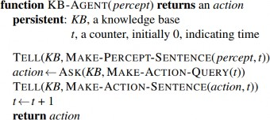
Hình 7.1 Một tác tử dựa trên tri thức chung. Với một percept, tác tử thêm percept đó vào cơ sở tri
thức của nó, hỏi cơ sở tri thức về hành động tốt nhất, và nói với cơ sở tri thức rằng nó đã thực sự
thực hiện hành động đó.
Hình 7.1 cho thấy phác thảo của một chương trình tác nhân dựa trên tri thức. Giống như tất cả các
tác nhân của chúng ta, nó nhận một tri giác làm đầu vào và trả về một hành động. Tác nhân duy trì
một cơ sở tri thức, KB, ban đầu có thể chứa một số tri thức nền.
Mỗi khi chương trình tác nhân được gọi, nó thực hiện ba việc. Đầu tiên, nó TELL cho cơ sở tri
thức những gì nó tri giác. Thứ hai, nó ASK cơ sở tri thức hành động nào nên thực hiện. Trong quá
trình trả lời truy vấn này, có thể thực hiện nhiều lập luận về trạng thái hiện tại của thế giới, về kết
quả của các chuỗi hành động có thể, v.v. Thứ ba, chương trình tác nhân TELL cho cơ sở tri thức
hành động nào đã được chọn và trả về hành động đó để nó có thể được thực thi.
Các chi tiết của ngôn ngữ biểu diễn được ẩn bên trong ba hàm thực hiện giao diện giữa các cảm
biến và cơ cấu chấp hành ở một bên và hệ thống biểu diễn và lập luận cốt lõi ở bên kia. MAKE-
PERCEPT-SENTENCE xây dựng một câu khẳng định rằng tác nhân đã tri giác tri giác đã cho tại
thời điểm đã cho. MAKE-ACTION-QUERY xây dựng một câu hỏi hành động nào nên được thực
hiện tại thời điểm hiện tại. Cuối cùng, MAKE-ACTION-SENTENCE xây dựng một câu khẳng
định rằng hành động đã chọn đã được thực thi. Các chi tiết của cơ chế suy luận được ẩn bên trong
TELL và ASK. Các mục sau sẽ tiết lộ các chi tiết này.
Tác nhân trong Hình 7.1 có vẻ khá giống với các tác nhân có trạng thái nội bộ được mô tả trong
Chương 2. Tuy nhiên, do định nghĩa của TELL và ASK, tác nhân dựa trên tri thức không phải là
một chương trình tùy ý để tính toán các hành động. Nó có thể được mô tả ở mức tri thức, nơi chúng
ta chỉ cần chỉ định những gì tác nhân biết và mục tiêu của nó là gì, để xác định hành vi của nó.
Ví dụ, một taxi tự động có thể có mục tiêu đưa hành khách từ San Francisco đến Hạt Marin và có
thể biết rằng Cầu Cổng Vàng là liên kết duy nhất giữa hai địa điểm này. Sau đó, chúng ta có thể
mong đợi nó băng qua Cầu Cổng Vàng vì nó biết rằng điều đó sẽ đạt được mục tiêu của nó. Lưu
ý rằng phân tích này độc lập với cách taxi hoạt động ở mức triển khai. Không quan trọng việc tri
thức địa lý của nó được triển khai dưới dạng danh sách liên kết hay bản đồ pixel, hoặc liệu nó lập
luận bằng cách thao tác các chuỗi ký hiệu được lưu trữ trong các thanh ghi hay bằng cách truyền
các tín hiệu nhiễu trong một mạng lưới tế bào thần kinh.
Một tác nhân dựa trên tri thức có thể được xây dựng đơn giản bằng cách TELL cho nó những gì
nó cần biết. Bắt đầu với một cơ sở tri thức trống, nhà thiết kế tác nhân có thể TELL từng câu một
cho đến khi tác nhân biết cách hoạt động trong môi trường của nó. Đây được gọi là cách tiếp cận
khai báo để xây dựng hệ thống. Ngược lại, cách tiếp cận thủ tục mã hóa các hành vi mong muốn
trực tiếp dưới dạng mã chương trình. Trong những năm 1970 và 1980, những người ủng hộ hai
cách tiếp cận này đã tham gia vào các cuộc tranh luận nảy lửa. Bây giờ chúng ta hiểu rằng một tác
nhân thành công thường kết hợp cả hai yếu tố khai báo và thủ tục trong thiết kế của nó, và tri thức
khai báo thường có thể được biên dịch thành mã thủ tục hiệu quả hơn.
Chúng ta cũng có thể cung cấp cho một tác nhân dựa trên tri thức các cơ chế cho phép nó tự học.
Những cơ chế này, được thảo luận trong Chương 19, tạo ra tri thức chung về môi trường từ một
chuỗi tri giác. Một tác nhân học tập có thể hoàn toàn tự chủ.
Thế giới Wumpus
Trong mục này, chúng ta mô tả một môi trường trong đó các tác nhân dựa trên tri thức có thể thể
hiện giá trị của chúng. Thế giới wumpus là một hang động bao gồm các phòng được kết nối bởi
các lối đi. Ẩn nấp đâu đó trong hang là con wumpus khủng khiếp, một con quái vật ăn thịt bất cứ
ai bước vào phòng của nó. Wumpus có thể bị bắn bởi một tác nhân, nhưng tác nhân chỉ có một
mũi tên. Một số phòng chứa các hố không đáy sẽ bẫy bất cứ ai đi vào những phòng này (ngoại trừ
wumpus, quá lớn để rơi vào). Điểm cứu rỗi duy nhất của môi trường ảm đạm này là khả năng tìm
thấy một đống vàng. Mặc dù thế giới wumpus khá nhạt nhẽo theo tiêu chuẩn trò chơi máy tính
hiện đại, nó minh họa một số điểm quan trọng về trí tuệ.
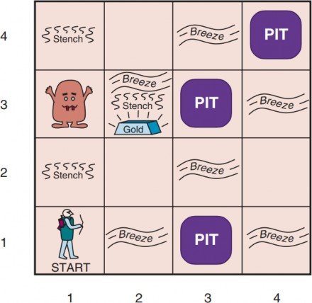
Hình 7.2 Một thế giới wumpus điển hình. Tác tử ở góc dưới cùng bên trái, quay mặt về hướng
đông (sang phải).
Một thế giới wumpus mẫu được hiển thị trong Hình 7.2. Định nghĩa chính xác của môi trường tác
vụ được đưa ra, như gợi ý trong Mục 2.3, bằng mô tả PEAS:
mũi tên, vì vậy chỉ hành động Bắn đầu tiên có hiệu lực. Cuối cùng, hành động Leo có thể
được sử dụng để leo ra khỏi hang, nhưng chỉ từ ô [1,1].
Trong các ô liền kề trực tiếp (không chéo) với wumpus, tác nhân sẽ tri giác mùi
Hôi thối.
Trong các ô liền kề trực tiếp với một hố, tác nhân sẽ tri giác Gió lùa.
Trong ô có vàng, tác nhân sẽ tri giác Ánh kim.
Khi một tác nhân đi vào tường, nó sẽ tri giác Va chạm.
Khi wumpus bị giết, nó phát ra một tiếng Thét thảm thiết có thể được tri giác ở bất
cứ đâu trong hang.
Các tri giác sẽ được cung cấp cho chương trình tác nhân dưới dạng một danh sách năm ký hiệu; ví
dụ, nếu có mùi hôi và gió lùa, nhưng không có ánh kim, va chạm hoặc tiếng thét, chương trình tác
nhân sẽ nhận được [Stench, Breeze, None, None, None].
Chúng ta có thể đặc trưng môi trường wumpus dọc theo các chiều khác nhau được đưa ra trong
Chương 2. Rõ ràng, nó là tất định, rời rạc, tĩnh và đơn tác nhân. (Wumpus không di chuyển, may
mắn thay.) Nó là tuần tự, vì phần thưởng có thể chỉ đến sau nhiều hành động được thực hiện. Nó
là một phần có thể quan sát được, vì một số khía cạnh của trạng thái không thể tri giác trực tiếp:
vị trí của tác nhân, tình trạng sức khỏe của wumpus và khả năng có sẵn một mũi tên. Đối với vị trí
của các hố và wumpus: chúng ta có thể coi chúng như các phần không được quan sát của trạng
thái—trong trường hợp đó, mô hình chuyển tiếp cho môi trường hoàn toàn đã biết, và việc tìm ra
vị trí của các hố hoàn thành tri thức của tác nhân về trạng thái. Ngoài ra, chúng ta có thể nói rằng
bản thân mô hình chuyển tiếp là không xác định vì tác nhân không biết hành động Tiến lên nào là
chết người—trong trường hợp đó, việc khám phá vị trí của các hố và wumpus hoàn thành tri thức
của tác nhân về mô hình chuyển tiếp.
Đối với một tác nhân trong môi trường, thách thức chính là sự thiếu hiểu biết ban đầu về cấu hình
của môi trường; vượt qua sự thiếu hiểu biết này dường như đòi hỏi lập luận logic. Trong hầu hết
các trường hợp của thế giới wumpus, tác nhân có thể lấy vàng một cách an toàn. Thỉnh thoảng, tác
nhân phải lựa chọn giữa việc về nhà tay không và mạo hiểm cái chết để tìm vàng. Khoảng 21%
các môi trường hoàn toàn không công bằng, vì vàng nằm trong một hố hoặc được bao quanh bởi
các hố.
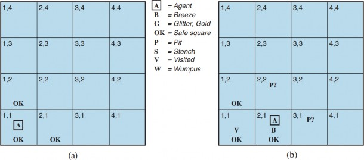
Hình 7.3 Bước đầu tiên được thực hiện bởi tác tử trong thế giới wumpus. (a) Tình huống ban đầu,
sau percept [None, None, None, None, None]. (b) Sau khi di chuyển đến [2,1] và cảm nhận [None,
Breeze, None, None, None].
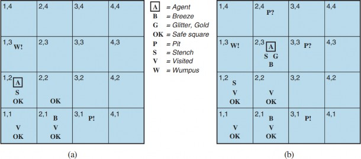
Hình 7.4 Hai giai đoạn sau trong quá trình tiến triển của tác tử. (a) Sau khi di chuyển đến [1,1] và
sau đó [1,2], và cảm nhận [Stench, None, None, None, None]. (b) Sau khi di chuyển đến [2,2] và
sau đó [2,3], và cảm nhận [Stench, Breeze, Glitter, None, None].
Hãy xem một tác nhân wumpus dựa trên tri thức khám phá môi trường được hiển thị trong Hình
7.2. Chúng ta sử dụng một ngôn ngữ biểu diễn tri thức không chính thức bao gồm việc viết các ký
hiệu trong một lưới (như trong Hình 7.3 và 7.4).
Cơ sở tri thức ban đầu của tác nhân chứa các quy tắc của môi trường, như đã mô tả trước đó; đặc
biệt, nó biết rằng nó đang ở [1,1] và [1,1] là một ô an toàn; chúng ta biểu thị điều đó bằng “A” và
“OK”, tương ứng, trong ô [1,1].
Tri giác đầu tiên là [None, None, None, None, None], từ đó tác nhân có thể kết luận rằng các ô
liền kề của nó, [1,2] và [2,1], không có nguy hiểm—chúng là OK. Hình 7.3(a) cho thấy trạng thái
tri thức của tác nhân tại thời điểm này.
Một tác nhân thận trọng sẽ chỉ di chuyển vào một ô mà nó biết là OK. Giả sử tác nhân quyết định
di chuyển về phía trước đến [2,1]. Tác nhân tri giác một luồng gió (được biểu thị bằng “B”) trong
[2,1], vì vậy phải có một hố trong một ô liền kề. Hố không thể ở [1,1], theo quy tắc của trò chơi,
vì vậy phải có một hố ở [2,2] hoặc [3,1] hoặc cả hai. Ký hiệu “P?” trong Hình 7.3(b) chỉ ra một hố
có thể có trong những ô đó. Tại thời điểm này, chỉ có một ô đã biết là OK và chưa được ghé thăm.
Vì vậy, tác nhân thận trọng sẽ quay lại, quay trở lại [1,1], và sau đó tiến đến [1,2].
Tác nhân tri giác mùi hôi trong [1,2], dẫn đến trạng thái tri thức được hiển thị trong Hình 7.4(a).
Mùi hôi trong [1,2] có nghĩa là phải có một wumpus gần đó. Nhưng wumpus không thể ở [1,1],
theo quy tắc của trò chơi, và nó không thể ở [2,2] (hoặc tác nhân đã phát hiện mùi hôi khi nó ở
[2,1]). Do đó, tác nhân có thể suy luận rằng wumpus ở [1,3]. Ký hiệu W! chỉ ra suy luận này. Hơn
nữa, việc không có gió lùa trong [1,2] ngụ ý rằng không có hố ở [2,2]. Tuy nhiên, tác nhân đã suy
luận rằng phải có một hố ở [2,2] hoặc [3,1], vì vậy điều này có nghĩa là nó phải ở [3,1]. Đây là một
suy luận khá khó, vì nó kết hợp tri thức thu được ở các thời điểm khác nhau ở các nơi khác nhau
và dựa vào việc không có tri giác để thực hiện một bước quan trọng.
Tác nhân bây giờ đã chứng minh với chính nó rằng không có hố hoặc wumpus ở [2,2], vì vậy an
toàn để di chuyển đến đó. Chúng tôi không hiển thị trạng thái tri thức của tác nhân tại [2,2]; chúng
tôi chỉ giả định rằng tác nhân quay và di chuyển đến [2,3], cho chúng ta Hình 7.4(b). Trong [2,3],
tác nhân phát hiện ánh kim, vì vậy nó nên lấy vàng và sau đó trở về nhà.
Lưu ý rằng trong mỗi trường hợp tác nhân rút ra kết luận từ thông tin có sẵn, kết luận đó được đảm
bảo là chính xác nếu thông tin có sẵn là chính xác. Đây là một tính chất cơ bản của lập luận logic.
Trong phần còn lại của chương này, chúng tôi mô tả cách xây dựng các tác nhân logic có thể biểu
diễn thông tin và rút ra các kết luận như những kết luận được mô tả trong các đoạn trước.
Logic
Phần này tóm tắt các khái niệm cơ bản về biểu diễn logic và suy luận. Những ý tưởng tuyệt vời
này độc lập với bất kỳ hình thức cụ thể nào của logic. Do đó, chúng ta sẽ tạm hoãn các chi tiết kỹ
thuật của những hình thức đó đến phần tiếp theo, sử dụng ví dụ quen thuộc về số học thông thường
thay thế.
Trong Mục 7.1, chúng ta đã nói rằng các cơ sở tri thức bao gồm các câu. Những câu này được biểu
diễn theo cú pháp của ngôn ngữ biểu diễn, quy định tất cả các câu được hình thành tốt. Khái niệm
cú pháp khá rõ ràng trong số học thông thường: “x + y = 4” là một câu được hình thành tốt, trong
khi “x4y + =” thì không.
Một hệ thống logic cũng phải định nghĩa ngữ nghĩa, hoặc ý nghĩa, của các câu. Ngữ nghĩa xác định
tính đúng đắn của mỗi câu đối với mỗi thế giới có thể. Ví dụ, ngữ nghĩa của số học quy định rằng
câu “x + y = 4” đúng trong một thế giới nơi x là 2 và y là 2, nhưng sai trong một thế giới nơi x là
1 và y là 1. Trong các hệ thống logic tiêu chuẩn, mỗi câu phải hoặc đúng hoặc sai trong mỗi thế
giới có thể—không có trường hợp “ở giữa”.²
Khi cần chính xác, chúng ta sử dụng thuật ngữ model (mô hình) thay cho “thế giới có thể”. Trong
khi thế giới có thể được coi là các môi trường (có khả năng) thực tế mà tác nhân có thể hoặc không
thể tồn tại, thì các mô hình là các khái niệm toán học, mỗi mô hình có một giá trị chân lý cố định
(đúng hoặc sai) cho mỗi câu liên quan. Một cách không chính thức, chúng ta có thể nghĩ về một
thế giới có thể như, ví dụ, có x nam và y nữ ngồi quanh bàn chơi bài, và câu x + y = 4 đúng khi có
tổng cộng bốn người. Một cách chính thức, các mô hình có thể chỉ là tất cả các phép gán số nguyên
không âm cho các biến x và y. Mỗi phép gán như vậy xác định tính đúng đắn của bất kỳ câu số
học nào có biến là x và y. Nếu một câu α đúng trong mô hình m, chúng ta nói rằng m thỏa mãn α
hoặc đôi khi m là một mô hình của α. Chúng ta sử dụng ký hiệu M(α) để chỉ tập hợp tất cả các mô
hình của α.
Bây giờ chúng ta đã có khái niệm về chân lý, chúng ta đã sẵn sàng để nói về suy luận logic. Điều
này liên quan đến mối quan hệ entailment (kéo theo) logic giữa các câu—ý tưởng rằng một câu
logic kéo theo một câu khác. Trong ký hiệu toán học, chúng ta viết:
𝛼 𝖼 𝛽
để chỉ rằng câu α kéo theo câu β. Định nghĩa chính thức của entailment là: α 𝖼 β nếu và chỉ nếu,
trong mọi mô hình mà α đúng, β cũng đúng. Sử dụng ký hiệu vừa giới thiệu, chúng ta có thể viết:
𝛼 𝖼 𝛽 nếu và chỉ nếu 𝑀(𝛼) ⊆ 𝑀(𝛽).
(Lưu ý hướng của ⊆ ở đây: nếu α 𝖼 β, thì α là một khẳng định mạnh hơn β: nó loại trừ nhiều thế
giới có thể hơn.) Mối quan hệ entailment quen thuộc từ số học; chúng ta dễ dàng chấp nhận ý
tưởng rằng câu x = 0 kéo theo câu xy = 0. Rõ ràng, trong bất kỳ mô hình nào mà x bằng không, thì
xy cũng bằng không (bất kể giá trị của y là gì).
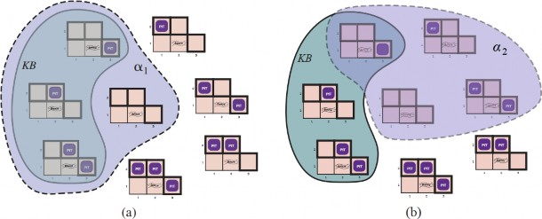
Hình 7.5 Các mô hình khả thi cho sự hiện diện của các hố trong các ô [1,2], [2,2] và [3,1]. KB
tương ứng với các quan sát không có gì ở [1,1] và một làn gió ở [2,1] được thể hiện bằng đường
liền. (a) Đường chấm thể hiện các mô hình của α1 (không có hố ở [1,2]). (b) Đường chấm thể hiện
các mô hình của α2 (không có hố ở [2,2]).
Chúng ta có thể áp dụng cùng một loại phân tích cho ví dụ suy luận trong thế giới wumpus được
đưa ra trong phần trước. Xem xét tình huống trong Hình 7.3(b): tác nhân không phát hiện gì ở [1,1]
và cảm nhận một làn gió ở [2,1]. Những nhận thức này, kết hợp với kiến thức của tác nhân về các
quy tắc của thế giới wumpus, tạo thành KB. Tác nhân quan tâm đến việc liệu các ô liền kề [1,2],
[2,2] và [3,1] có chứa hố hay không. Mỗi trong ba ô này có thể chứa hoặc không chứa hố, vì vậy
(bỏ qua các khía cạnh khác của thế giới hiện tại) có 23 = 8 mô hình có thể. Tám mô hình này được
hiển thị trong Hình 7.5.³
KB có thể được coi là một tập hợp các câu hoặc một câu đơn lẻ khẳng định tất cả các câu riêng lẻ.
KB sai trong các mô hình mâu thuẫn với những gì tác nhân biết—ví dụ, KB sai trong bất kỳ mô
hình nào mà [1,2] chứa một hố, bởi vì không có làn gió ở [1,1]. Trên thực tế, chỉ có ba mô hình
mà KB đúng, và chúng được hiển thị với một đường viền đặc trong Hình 7.5. Bây giờ chúng ta
hãy xem xét hai kết luận có thể:
𝛼1 = "Không có hố ở [1,2]." 𝛼2 = "Không có hố ở [2,2]."
Chúng ta đã bao quanh các mô hình của α₁ và α₂ bằng các đường chấm chấm trong Hình 7.5(a) và
7.5(b), tương ứng. Bằng cách kiểm tra, chúng ta thấy:
Trong mọi mô hình mà KB đúng, α₁ cũng đúng.
Do đó, KB 𝖼 α₁: không có hố ở [1,2]. Chúng ta cũng có thể thấy rằng:
Trong một số mô hình mà KB đúng, α₂ sai.
Do đó, KB không kéo theo α₂: tác nhân không thể kết luận rằng không có hố ở [2,2]. (Cũng không
thể kết luận rằng có một hố ở [2,2].)⁴
Ví dụ trước không chỉ minh họa entailment mà còn cho thấy cách định nghĩa của entailment có thể
được áp dụng để rút ra kết luận—tức là thực hiện suy luận logic. Thuật toán suy luận được minh
họa trong Hình 7.5 được gọi là kiểm tra mô hình (model checking), vì nó liệt kê tất cả các mô
hình có thể để kiểm tra rằng α đúng trong tất cả các mô hình mà KB đúng, tức là M(KB) ⊆ M(α).
³ Mặc dù hình vẽ cho thấy các mô hình như các phần của thế giới wumpus, chúng thực sự không
gì khác hơn là các phép gán đúng và sai cho các câu “có một hố ở [1,2]” v.v. Các mô hình, theo
nghĩa toán học, không cần phải có những con wumpus khủng khiếp trong đó.
⁴ Tác nhân có thể tính toán xác suất có một hố ở [2,2]; Chương 12 sẽ chỉ ra cách thực hiện điều
này.
Suy luận logic
Trong việc hiểu entailment và suy luận, có thể hữu ích khi nghĩ về tập hợp tất cả các hệ quả của
KB như một đống cỏ khô và α như một cây kim. Entailment giống như việc cây kim nằm trong
đống cỏ khô; suy luận giống như việc tìm ra nó. Sự khác biệt này được thể hiện trong một số ký
hiệu chính thức: nếu một thuật toán suy luận i có thể suy ra α từ KB, chúng ta viết:
𝐾𝐵 ⊢𝑖 𝛼,
được phát âm là “α được suy ra từ KB bởi i” hoặc “i suy ra α từ KB.”
Một thuật toán suy luận chỉ suy ra các câu được kéo theo được gọi là sound (đúng đắn) hoặc bảo. Tính đúng đắn là một tính chất rất mong muốn. Một quy trình
suy luận không đúng đắn về cơ bản tạo ra mọi thứ khi nó tiến hành—nó thông báo việc phát hiện
ra những cây kim không tồn tại.
Dễ dàng thấy rằng kiểm tra mô hình, khi có thể áp dụng,⁵ là một quy trình đúng đắn.
Tính chất đầy đủ (completeness) cũng rất mong muốn: một thuật toán suy luận là đầy đủ nếu nó
có thể suy ra bất kỳ câu nào được kéo theo. Đối với những đống cỏ khô thực tế, có phạm vi hữu
hạn, có vẻ hiển nhiên rằng một sự kiểm tra hệ thống luôn có thể quyết định liệu cây kim có trong
đống cỏ khô hay không. Tuy nhiên, đối với nhiều cơ sở tri thức, đống cỏ khô của các hệ quả là vô
hạn, và tính đầy đủ trở thành một vấn đề quan trọng.⁶ May mắn thay, có các quy trình suy luận đầy
đủ cho các hệ thống logic đủ biểu đạt để xử lý nhiều cơ sở tri thức.
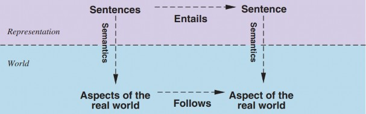
Hình 7.6 Các câu là các cấu hình vật lý của tác tử, và suy luận là một quá trình xây dựng các cấu
hình vật lý mới từ các cấu hình cũ. Suy luận logic nên đảm bảo rằng các cấu hình mới đại diện cho
các khía cạnh của thế giới thực sự đi theo các khía cạnh mà các cấu hình cũ đại diện.
Chúng ta đã mô tả một quá trình suy luận mà các kết luận của nó được đảm bảo đúng trong bất kỳ
thế giới nào mà các tiền đề đúng; cụ thể, nếu KB đúng trong thế giới thực, thì bất kỳ câu α nào
được suy ra từ KB bằng một quy trình suy luận đúng đắn cũng đúng trong thế giới thực. Vì vậy,
trong khi một quá trình suy luận hoạt động trên “cú pháp”—các cấu hình vật lý bên trong như các
bit trong thanh ghi hoặc các mẫu tín hiệu điện trong não bộ—quá trình này tương ứng với mối
quan hệ thế giới thực, theo đó một khía cạnh nào đó của thế giới thực là đúng nhờ các khía cạnh
khác của thế giới thực cũng đúng.⁷ Mối tương quan này giữa thế giới và biểu diễn được minh họa
trong Hình 7.6.
Vấn đề cuối cùng cần xem xét là grounding—sự kết nối giữa các quá trình suy luận logic và môi
trường thực tế mà tác nhân tồn tại. Cụ thể, làm thế nào chúng ta biết rằng KB đúng trong thế giới
thực? (Xét cho cùng, KB chỉ là “cú pháp” bên trong tâm trí của tác nhân.) Đây là một câu hỏi triết
học mà rất nhiều sách đã được viết về nó. (Xem Chương 28.) Một câu trả lời đơn giản là các cảm
biến của tác nhân tạo ra kết nối. Ví dụ, tác nhân trong thế giới wumpus có một cảm biến mùi.
Chương trình tác nhân tạo ra một câu phù hợp bất cứ khi nào có mùi. Sau đó, bất cứ khi nào câu
đó có trong cơ sở tri thức, nó đúng trong thế giới thực. Do đó, ý nghĩa và chân lý của các câu nhận
thức được xác định bởi các quá trình cảm nhận và xây dựng câu tạo ra chúng. Còn phần còn lại
của kiến thức của tác nhân, chẳng hạn như niềm tin rằng wumpus gây ra mùi ở các ô liền kề, thì
sao? Đây không phải là biểu diễn trực tiếp của một nhận thức đơn lẻ, mà là một quy tắc chung—
có thể được suy ra từ kinh nghiệm nhận thức nhưng không giống với một tuyên bố về kinh nghiệm
đó. Các quy tắc chung như thế này được tạo ra bởi một quá trình xây dựng câu gọi là học tập, là
chủ đề của Phần V. Học tập có thể sai lầm. Có thể xảy ra trường hợp wumpus gây ra mùi trừ ngày
29 tháng 2 trong năm nhuận, khi chúng đi tắm. Do đó, KB có thể không đúng trong thế giới thực,
nhưng với các quy trình học tập tốt, chúng ta có lý do để lạc quan.
⁵ Kiểm tra mô hình hoạt động nếu không gian của các mô hình là hữu hạn—ví dụ, trong các thế
giới wumpus có kích thước cố định. Đối với số học, mặt khác, không gian của các mô hình là vô
hạn: ngay cả khi chúng ta giới hạn bản thân trong các số nguyên, có vô hạn cặp giá trị cho x và y
trong câu x + y = 4.
⁶ So sánh với trường hợp không gian tìm kiếm vô hạn trong Chương 3, nơi tìm kiếm theo chiều
sâu không đầy đủ.
⁷ Như Wittgenstein (1922) đã nói trong tác phẩm nổi tiếng Tractatus của mình: “Thế giới là tất cả
những gì đang xảy ra.”
Logic Mệnh Đề: Một Logic Đơn Giản
Trong phần này, chúng tôi trình bày logic mệnh đề. Chúng tôi mô tả cú pháp (cấu trúc của các câu)
và ngữ nghĩa (cách xác định tính đúng đắn của các câu). Từ đó, chúng tôi rút ra một thuật toán suy
luận cú pháp đơn giản để triển khai khái niệm ngữ nghĩa của sự kéo theo. Tất nhiên, mọi thứ diễn
ra trong thế giới wumpus.
Cú pháp
Cú pháp của logic mệnh đề định nghĩa các câu hợp lệ. Các câu nguyên tử bao gồm một ký hiệu
mệnh đề đơn lẻ. Mỗi ký hiệu như vậy đại diện cho một mệnh đề có thể đúng hoặc sai. Chúng tôi
sử dụng các ký hiệu bắt đầu bằng chữ in hoa và có thể chứa các chữ cái hoặc chỉ số khác, ví dụ:
𝑃, 𝑄, 𝑅, 𝑊1,3 và FacingEast. Các tên này là tùy ý nhưng thường được chọn để có giá trị gợi nhớ—
chúng tôi sử dụng 𝑊1,3 để đại diện cho mệnh đề rằng con wumpus ở vị trí [1,3]. (Hãy nhớ rằng
các ký hiệu như 𝑊1,3 là nguyên tử, tức là 𝑊, 1 và 3 không phải là các phần có ý nghĩa của ký hiệu.)
Có hai ký hiệu mệnh đề với ý nghĩa cố định: True là mệnh đề luôn đúng và False là mệnh đề luôn
sai.
Các câu phức tạp được xây dựng từ các câu đơn giản hơn, sử dụng dấu ngoặc đơn và các toán tử
gọi là liên từ logic. Có năm liên từ thường được sử dụng:
¬ (phủ định): Một câu như ¬𝑊1,3 được gọi là phủ định của 𝑊1,3 . Một literal là một câu
nguyên tử (literal dương) hoặc một câu nguyên tử bị phủ định (literal âm).
∧ (và): Một câu có liên từ chính là ∧ , chẳng hạn như 𝑊1,3 ∧ 𝑃3,1 , được gọi là một hội; các
phần của nó là các hội. (Ký hiệu ∧ trông giống chữ “A” trong “And”.)
∨ (hoặc): Một câu có liên từ chính là ∨ , chẳng hạn như (𝑊1,3 ∧ 𝑃3,1) ∨ 𝑊2,2 , là một tuyển;
các phần của nó là các tuyển—trong ví dụ này là (𝑊1,3 ∧ 𝑃3,1) và 𝑊2,2 .
⇒ (kéo theo): Một câu như (𝑊1,3 ∧ 𝑃3,1) ⇒ ¬𝑊2,2 được gọi là một kéo theo (hoặc điều
kiện). Tiền đề hoặc giả thiết của nó là (𝑊1,3 ∧ 𝑃3,1) , và kết luận hoặc hệ quả của nó là
¬𝑊2,2 . Các kéo theo còn được gọi là các quy tắc hoặc các câu lệnh “nếu–thì”. Ký hiệu
kéo theo đôi khi được viết trong các sách khác là ⊃ hoặc → .
⇔ (khi và chỉ khi): Câu 𝑊1,3 ⇔ ¬𝑊2,2 là một song điều kiện.
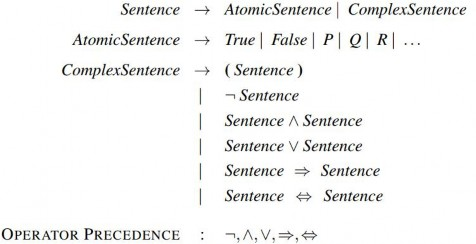
Hình 7.7 Ngữ pháp BNF (Dạng Backus–Naur) của các câu trong logic mệnh đề, cùng với thứ tự
ưu tiên của toán tử, từ cao nhất đến thấp nhất.
Hình 7.7 trình bày một ngữ pháp BNF (Backus–Naur Form) chính thức của các câu trong logic
mệnh đề, cùng với thứ tự ưu tiên của các toán tử, từ cao nhất đến thấp nhất. Ký hiệu BNF được
giải thích ở trang 1081. Ngữ pháp BNF được bổ sung với một danh sách thứ tự ưu tiên toán tử để
loại bỏ sự mơ hồ khi sử dụng nhiều toán tử. Toán tử “not” ( ¬ ) có độ ưu tiên cao nhất, nghĩa là
trong câu ¬𝐴 ∧ 𝐵 , ¬ liên kết chặt chẽ nhất, cho chúng ta tương đương với (¬𝐴) ∧ 𝐵 chứ không
phải ¬(𝐴 ∧ 𝐵) . (Ký hiệu trong số học thông thường cũng tương tự: −2 + 4 là 2, không phải -6.)
Khi thích hợp, chúng tôi cũng sử dụng dấu ngoặc đơn và ngoặc vuông để làm rõ cấu trúc câu dự
định và cải thiện khả năng đọc.
Ngữ nghĩa
Sau khi xác định cú pháp của logic mệnh đề, chúng tôi sẽ xác định ngữ nghĩa của nó. Ngữ nghĩa
định nghĩa các quy tắc để xác định tính đúng đắn của một câu đối với một mô hình cụ thể. Trong
logic mệnh đề, một mô hình đơn giản chỉ định giá trị chân lý—đúng hoặc sai—cho mọi ký hiệu
mệnh đề. Ví dụ, nếu các câu trong cơ sở tri thức sử dụng các ký hiệu mệnh đề 𝑃1,2, 𝑃2,2 và 𝑃3,1 ,
thì một mô hình có thể là:
𝑚1 = {𝑃1,2 = 𝑓𝑎𝑙𝑠𝑒, 𝑃2,2 = 𝑓𝑎𝑙𝑠𝑒, 𝑃3,1 = 𝑡𝑟𝑢𝑒}.
Với ba ký hiệu mệnh đề, có 23 = 8 mô hình khả dĩ—chính xác là những mô hình được mô tả trong
Hình 7.5. Tuy nhiên, lưu ý rằng các mô hình này chỉ là các đối tượng toán học mà không nhất thiết
phải có kết nối với thế giới wumpus. 𝑃1,2 chỉ là một ký hiệu; nó có thể có nghĩa là “có một hố ở
[1,2]” hoặc “hôm nay và ngày mai tôi ở Paris.”
Ngữ nghĩa của logic mệnh đề phải chỉ định cách tính giá trị chân lý của bất kỳ câu nào, với một
mô hình cho trước. Điều này được thực hiện một cách đệ quy. Tất cả các câu được xây dựng từ
các câu nguyên tử và năm liên từ; do đó, chúng tôi cần chỉ định cách tính giá trị chân lý của các
câu nguyên tử và cách tính giá trị chân lý của các câu được hình thành với mỗi liên từ trong năm
liên từ. Các câu nguyên tử rất dễ xác định:
Giá trị chân lý của mọi ký hiệu mệnh đề khác phải được chỉ định trực tiếp trong mô hình.
Ví dụ, trong mô hình 𝑚1 đã cho, 𝑃1,2 là sai.
Đối với các câu phức tạp, chúng tôi có năm quy tắc, áp dụng cho bất kỳ câu con 𝑃 và 𝑄 nào
(nguyên tử hoặc phức tạp) trong bất kỳ mô hình 𝑚 nào (ở đây “iff” có nghĩa là “khi và chỉ khi”):
¬𝑃 đúng iff 𝑃 sai trong 𝑚 .
𝑃 ∧ 𝑄 đúng iff cả 𝑃 và 𝑄 đều đúng trong 𝑚 .
𝑃 ∨ 𝑄 đúng iff 𝑃 hoặc 𝑄 đúng trong 𝑚 .
𝑃 ⇒ 𝑄 đúng trừ khi 𝑃 đúng và 𝑄 sai trong 𝑚 .
𝑃 ⇔ 𝑄 đúng iff 𝑃 và 𝑄 cùng đúng hoặc cùng sai trong 𝑚 .
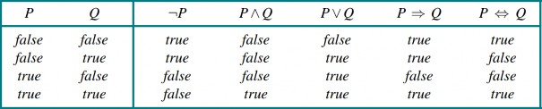
Hình 7.8 Bảng chân lý cho năm liên từ logic. Để sử dụng bảng tính toán, ví dụ, giá trị của 𝑃 ∨ 𝑄
khi P đúng và Q sai, trước tiên hãy nhìn vào bên trái để tìm hàng mà P đúng và Q sai (hàng thứ
ba). Sau đó nhìn trong hàng đó dưới cột 𝑃 ∨ 𝑄 để thấy kết quả: đúng.
Các quy tắc này cũng có thể được biểu diễn bằng bảng chân lý, chỉ định giá trị chân lý của một
câu phức tạp cho mỗi phép gán giá trị chân lý có thể có cho các thành phần của nó. Bảng chân lý
cho năm liên từ được trình bày trong Hình 7.8. Từ các bảng này, giá trị chân lý của bất kỳ câu 𝑠
nào có thể được tính toán đối với bất kỳ mô hình 𝑚 nào bằng cách đánh giá đệ quy đơn giản. Ví
dụ, câu ¬𝑃1,2 ∧ (𝑃2,2 ∨ 𝑃3,1) , được đánh giá trong 𝑚1 , cho 𝑡𝑟𝑢𝑒 ∧ (𝑓𝑎𝑙𝑠𝑒 ∨ 𝑡𝑟𝑢𝑒) = 𝑡𝑟𝑢𝑒 ∧
𝑡𝑟𝑢𝑒 = 𝑡𝑟𝑢𝑒 . Bài tập 7.TRUV yêu cầu bạn viết thuật toán PL-True?(s, m), tính toán giá trị chân
lý của một câu logic mệnh đề 𝑠 trong một mô hình 𝑚 .
Bảng chân lý cho “và”, “hoặc” và “không” phù hợp chặt chẽ với trực giác của chúng ta về các từ
tiếng Anh tương ứng. Điểm có thể gây nhầm lẫn chính là 𝑃 ∨ 𝑄 đúng khi 𝑃 đúng hoặc 𝑄 đúng
hoặc cả hai. Một liên từ khác, gọi là “hoặc loại trừ” (“xor” viết tắt), cho kết quả sai khi cả hai tuyển
đều đúng. Không có sự đồng thuận về ký hiệu cho “hoặc loại trừ”; một số lựa chọn là ∨ hoặc ≠
hoặc ⊕ .
Bảng chân lý cho ⇒ có thể không hoàn toàn phù hợp với sự hiểu biết trực giác của một người về
” 𝑃 kéo theo 𝑄 ” hoặc “nếu 𝑃 thì 𝑄”. Một mặt, logic mệnh đề không yêu cầu bất kỳ mối quan hệ
nhân quả hoặc liên quan nào giữa 𝑃 và 𝑄 . Câu “5 là số lẻ kéo theo Tokyo là thủ đô của Nhật Bản”
là một câu đúng trong logic mệnh đề (theo cách diễn giải thông thường), mặc dù đó là một câu
tiếng Anh rất kỳ lạ. Một điểm gây nhầm lẫn khác là bất kỳ kéo theo nào cũng đúng khi tiền đề của
nó sai. Ví dụ, “5 là số chẵn kéo theo Sam thông minh” là đúng, bất kể Sam có thông minh hay
không. Điều này có vẻ kỳ lạ, nhưng nó có ý nghĩa nếu bạn nghĩ về ” 𝑃 ⇒ 𝑄 ” như là nói rằng,
“Nếu 𝑃 đúng, thì tôi khẳng định rằng 𝑄 đúng; nếu không, tôi không đưa ra bất kỳ khẳng định nào.”
Cách duy nhất để câu này sai là khi 𝑃 đúng nhưng 𝑄 sai.
Song điều kiện, 𝑃 ⇔ 𝑄 , đúng bất cứ khi nào cả 𝑃 ⇒ 𝑄 và 𝑄 ⇒ 𝑃 đều đúng. Trong tiếng Anh,
điều này thường được viết là ” 𝑃 nếu và chỉ nếu 𝑄 “. Nhiều quy tắc của thế giới wumpus được viết
tốt nhất bằng cách sử dụng ⇔ . Ví dụ, một ô vuông có gió nếu một ô vuông lân cận có hố, và một
ô vuông có gió chỉ khi một ô vuông lân cận có hố. Vì vậy, chúng ta cần một song điều kiện:
𝐵1,1 ⇔ (𝑃1,2 ∨ 𝑃2,1),
trong đó 𝐵1,1 có nghĩa là có gió ở [1,1].
Một cơ sở tri thức đơn giản
Bây giờ chúng ta có thể xây dựng một cơ sở tri thức cho thế giới wumpus. Trước tiên, chúng tôi
tập trung vào các khía cạnh bất biến của thế giới wumpus, để các khía cạnh thay đổi cho một phần
sau. Hiện tại, chúng tôi cần các ký hiệu sau cho mỗi vị trí [x,y]:
𝑃𝑥,𝑦 đúng nếu có một hố ở [x,y].
𝑊𝑥,𝑦 đúng nếu có một wumpus ở [x,y], dù sống hay chết.
𝐵𝑥,𝑦 đúng nếu có gió ở [x,y].
𝑆𝑥,𝑦 đúng nếu có mùi hôi ở [x,y].
𝐿𝑥,𝑦 đúng nếu tác nhân ở vị trí [x,y].
Các câu chúng tôi viết sẽ đủ để suy ra ¬𝑃1,2 (không có hố ở [1,2]), như đã được thực hiện một
cách không chính thức trong Phần 7.3. Chúng tôi gắn nhãn mỗi câu là 𝑅𝑖 để có thể tham chiếu
chúng:
Không có hố ở [1,1]:
𝑅1: ¬𝑃1,1.
Một ô vuông có gió nếu và chỉ nếu có một hố trong một ô vuông lân cận. Điều này phải
được nêu cho mỗi ô vuông; hiện tại, chúng tôi chỉ bao gồm các ô vuông liên quan:
𝑅2: 𝐵1,1 ⇔ (𝑃1,2 ∨ 𝑃2,1).
𝑅3: 𝐵2,1 ⇔ (𝑃1,1 ∨ 𝑃2,2 ∨ 𝑃3,1).
Các câu trước đúng trong mọi thế giới wumpus. Bây giờ chúng tôi bao gồm các nhận thức
về gió cho hai ô vuông đầu tiên mà tác nhân đã ghé thăm trong thế giới cụ thể mà tác nhân
đang ở, dẫn đến tình huống trong Hình 7.3(b).
𝑅4: ¬𝐵1,1.
𝑅5: 𝐵2,1.
Một quy trình suy luận đơn giản
Mục tiêu của chúng ta bây giờ là quyết định xem 𝐾𝐵 𝖼 𝛼 cho một số câu 𝛼 . Ví dụ, ¬𝑃1,2 có được
kéo theo từ 𝐾𝐵 của chúng ta không? Thuật toán đầu tiên của chúng ta để suy luận là một cách tiếp
cận kiểm tra mô hình, triển khai trực tiếp định nghĩa của sự kéo theo: liệt kê các mô hình và kiểm
tra rằng 𝛼 đúng trong mọi mô hình mà 𝐾𝐵 đúng. Các mô hình là các phép gán đúng hoặc sai cho
mọi ký hiệu mệnh đề. Quay lại ví dụ thế giới wumpus của chúng ta, các ký hiệu mệnh đề liên quan
là 𝐵1,1, 𝐵2,1, 𝑃1,1, 𝑃1,2, 𝑃2,1, 𝑃2,2 và 𝑃3,1 . Với bảy ký hiệu, có 27 = 128 mô hình khả dĩ; trong ba
mô hình này, 𝐾𝐵 đúng (Hình 7.9). Trong ba mô hình đó, ¬𝑃1,2 đúng, do đó không có hố ở [1,2].
Mặt khác, 𝑃2,2 đúng trong hai trong số ba mô hình và sai trong một, vì vậy chúng ta chưa thể biết
liệu có một hố ở [2,2] hay không.
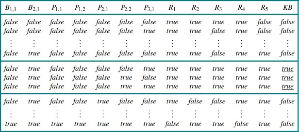
Hình 7.9 Một bảng chân lý được xây dựng cho cơ sở tri thức được đưa ra trong văn bản. KB đúng
nếu 𝑅1 đến 𝑅5 đúng, điều này chỉ xảy ra trong 3 trong số 128 hàng (các hàng được gạch dưới ở
cột ngoài cùng bên phải). Trong cả 3 hàng, 𝑃1,2 sai, vì vậy không có hố ở [1,2]. Mặt khác, có thể
có (hoặc có thể không) có một cái hố ở [2,2].
Hình 7.9 tái tạo một cách chính xác hơn lập luận được minh họa trong Hình 7.5. Một thuật toán
tổng quát để quyết định sự kéo theo trong logic mệnh đề được hiển thị trong Hình 7.10. Giống như
thuật toán Backtracking-Search ở trang 176, TT-Entails? thực hiện một liệt kê đệ quy theo chiều
sâu của một không gian hữu hạn các phép gán cho các ký hiệu. Thuật toán này đúng vì nó triển
khai trực tiếp định nghĩa của sự kéo theo và đầy đủ vì nó hoạt động cho bất kỳ 𝐾𝐵 và 𝛼 nào và
luôn dừng—chỉ có hữu hạn mô hình để kiểm tra.
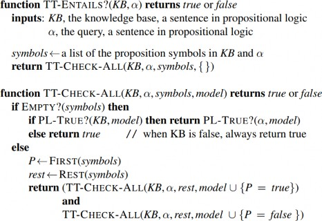
Hình 7.10 Một thuật toán liệt kê bảng chân lý để quyết định sự bao hàm mệnh đề. (TT là viết tắt
của bảng chân lý.) PL-TRUE? trả về giá trị true nếu một câu đúng trong một mô hình. Biến model
đại diện cho một mô hình một phần—một sự gán giá trị cho một số ký hiệu. Từ khóa and ở đây là
một ký hiệu hàm trung tố trong ngôn ngữ lập trình giả mã, không phải là một toán tử trong logic
mệnh đề; nó nhận hai đối số và trả về true hoặc false.
Tất nhiên, “hữu hạn” không phải lúc nào cũng giống như “ít”. Nếu 𝐾𝐵 và 𝛼 chứa tổng cộng 𝑛 ký
hiệu, thì có 2𝑛 mô hình. Do đó, độ phức tạp thời gian của thuật toán là 𝑂(2𝑛) . (Độ phức tạp không
gian chỉ là 𝑂(𝑛) vì việc liệt kê là theo chiều sâu.) Sau này trong chương này, chúng tôi sẽ trình
bày các thuật toán hiệu quả hơn trong nhiều trường hợp. Thật không may, vấn đề kéo theo mệnh
đề là co-NP-đầy đủ (tức là có lẽ không dễ hơn NP-đầy đủ—xem Phụ lục A), vì vậy mọi thuật toán
suy luận đã biết cho logic mệnh đề đều có độ phức tạp trong trường hợp xấu nhất là hàm mũ theo
kích thước đầu vào.
Định lý Chứng minh Mệnh đề
Trong phần trước, chúng ta đã chỉ ra cách xác định hệ quả logic bằng cách kiểm tra mô hình: liệt
kê các mô hình và chứng minh rằng câu cần kiểm tra phải đúng trong tất cả các mô hình. Trong
phần này, chúng ta sẽ trình bày cách thực hiện hệ quả logic bằng định lý chứng minh—áp dụng
trực tiếp các quy tắc suy luận vào các câu trong cơ sở tri thức để xây dựng một chứng minh cho
câu mong muốn mà không cần tham khảo các mô hình. Nếu số lượng mô hình lớn nhưng độ dài
của chứng minh ngắn, thì định lý chứng minh có thể hiệu quả hơn kiểm tra mô hình.
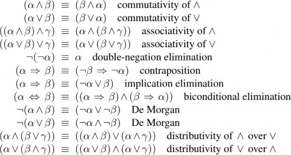
Hình 7.11 Các tương đương logic chuẩn. Các ký hiệu 𝛼, 𝛽, và 𝛾 đại diện cho các câu tùy ý của
logic mệnh đề.
Trước khi đi vào chi tiết các thuật toán định lý chứng minh, chúng ta cần một số khái niệm bổ sung
liên quan đến hệ quả logic. Khái niệm đầu tiên là tương đương logic: hai câu 𝛼 và 𝛽 được gọi là
tương đương logic nếu chúng đúng trong cùng một tập hợp các mô hình. Ký hiệu 𝛼 ≡ 𝛽 . (Lưu ý
rằng ≡ dùng để khẳng định về các câu, trong khi ⇔ là một phần của câu.) Chẳng hạn, ta có thể dễ
dàng chứng minh (bằng bảng chân lý) rằng 𝑃 ∧ 𝑄 và 𝑄 ∧ 𝑃 là tương đương logic; các tương đương
khác được trình bày trong Hình 7.11. Những tương đương này đóng vai trò tương tự như các đẳng
thức số học trong toán học thông thường.
Một định nghĩa khác của tương đương là: hai câu 𝛼 và 𝛽 tương đương nếu và chỉ nếu mỗi câu là
hệ quả của câu kia:
𝛼 ≡ 𝛽 nếu và chỉ nếu 𝛼 𝖼 𝛽 và 𝛽 𝖼 𝛼.
Khái niệm thứ hai chúng ta cần là tính hợp lệ (validity). Một câu được gọi là hợp lệ nếu nó đúng
trong mọi mô hình. Ví dụ, câu 𝑃 ∨ ¬𝑃 là hợp lệ. Các câu hợp lệ còn được gọi là hằng đúng—chúng luôn đúng. Vì câu True luôn đúng trong mọi mô hình, nên mọi câu hợp lệ
đều tương đương logic với True. Các câu hợp lệ có ích như thế nào? Từ định nghĩa của hệ quả
logic, ta có thể suy ra định lý suy luận (deduction theorem), vốn đã được người Hy Lạp cổ đại
biết đến:
Với mọi câu 𝛼 và 𝛽, 𝛼 𝖼 𝛽 nếu và chỉ nếu câu (𝛼 ⇒ 𝛽) là hợp lệ.
(Phần Bài tập 7.DEDU yêu cầu chứng minh điều này.) Do đó, ta có thể kiểm tra 𝛼 𝖼 𝛽 bằng cách
xác minh rằng (𝛼 ⇒ 𝛽) đúng trong mọi mô hình—về cơ bản là những gì thuật toán suy luận trong
Hình 7.10 thực hiện—hoặc bằng cách chứng minh rằng (𝛼 ⇒ 𝛽) tương đương với True. Ngược
lại, định lý suy luận khẳng định rằng mọi câu kéo theo hợp lệ đều mô tả một suy luận hợp lệ.
Khái niệm cuối cùng chúng ta cần là tính thỏa được (satisfiability). Một câu được gọi là thỏa
được nếu nó đúng trong một mô hình nào đó. Ví dụ, cơ sở tri thức đã cho trước đó, (𝑅1 ∧ 𝑅2 ∧
𝑅3 ∧ 𝑅4 ∧ 𝑅5) , là thỏa được vì có ba mô hình mà nó đúng, như trong Hình 7.9. Tính thỏa được có
thể được kiểm tra bằng cách liệt kê các mô hình khả dĩ cho đến khi tìm thấy một mô hình thỏa mãn
câu đó. Bài toán xác định tính thỏa được của các câu trong logic mệnh đề—bài toán SAT—là bài
toán đầu tiên được chứng minh là NP-đầy đủ. Nhiều vấn đề trong khoa học máy tính thực chất là
các bài toán thỏa mãn ràng buộc. Chẳng hạn, tất cả các bài toán thỏa mãn ràng buộc trong Chương
5 đều hỏi liệu các ràng buộc có thể được thỏa mãn bởi một phép gán nào đó hay không.
Tính hợp lệ và tính thỏa được có mối liên hệ chặt chẽ: 𝛼 là hợp lệ khi và chỉ khi ¬𝛼 không thỏa
được; ngược lại, 𝛼 là thỏa được khi và chỉ khi ¬𝛼 không hợp lệ. Chúng ta cũng có kết quả hữu ích
sau:
𝛼 𝖼 𝛽 nếu và chỉ nếu câu (𝛼 ∧ ¬𝛽)
Việc chứng minh 𝛽 từ 𝛼 bằng cách kiểm tra tính không thỏa được của (𝛼 ∧ ¬𝛽) tương ứng chính
xác với kỹ thuật chứng minh toán học tiêu chuẩn phản chứng (reductio ad absurdum) (nghĩa là
“dẫn đến điều vô lý”). Nó còn được gọi là chứng minh bằng phủ định hoặc chứng minh bằng. Người ta giả định câu 𝛽 là sai và chỉ ra rằng điều này dẫn đến mâu thuẫn với các tiên
đề đã biết 𝛼 . Mâu thuẫn này chính là điều được hiểu khi nói rằng câu (𝛼 ∧ ¬𝛽) không thỏa được.
Suy luận và Chứng minh
Phần này trình bày các quy tắc suy luận có thể được áp dụng để suy ra một chứng minh—một
chuỗi kết luận dẫn đến mục tiêu mong muốn. Quy tắc nổi tiếng nhất là Modus Ponens (tiếng
Latinh có nghĩa là “phương thức khẳng định”) và được viết như sau:
𝛼 ⇒ 𝛽, 𝛼
.
𝛽
Ký hiệu này có nghĩa là, bất cứ khi nào có các câu dạng 𝛼 ⇒ 𝛽 và 𝛼 , thì câu 𝛽 có thể được suy
ra. Ví dụ, nếu (𝑊𝑢𝑚𝑝𝑢𝑠𝐴ℎ𝑒𝑎𝑑 ∧ 𝑊𝑢𝑚𝑝𝑢𝑠𝐴𝑙𝑖𝑣𝑒) ⇒ 𝑆ℎ𝑜𝑜𝑡 và (𝑊𝑢𝑚𝑝𝑢𝑠𝐴ℎ𝑒𝑎𝑑 ∧
𝑊𝑢𝑚𝑝𝑢𝑠𝐴𝑙𝑖𝑣𝑒) được cho, thì 𝑆ℎ𝑜𝑜𝑡 có thể được suy ra.
Một quy tắc suy luận hữu ích khác là Loại bỏ Và (And-Elimination), khẳng định rằng từ một
phép hội, bất kỳ thành phần nào trong đó cũng có thể được suy ra:
𝛼 ∧ 𝛽
.
𝛼
Ví dụ, từ (𝑊𝑢𝑚𝑝𝑢𝑠𝐴ℎ𝑒𝑎𝑑 ∧ 𝑊𝑢𝑚𝑝𝑢𝑠𝐴𝑙𝑖𝑣𝑒) , có thể suy ra 𝑊𝑢𝑚𝑝𝑢𝑠𝐴𝑙𝑖𝑣𝑒 .
Bằng cách xem xét các giá trị chân lý khả dĩ của 𝛼 và 𝛽 , ta có thể dễ dàng chứng minh một lần
cho tất cả rằng Modus Ponens và Loại bỏ Và là đúng đắn (sound). Những quy tắc này sau đó có
thể được sử dụng trong bất kỳ trường hợp cụ thể nào mà chúng áp dụng, tạo ra các suy luận đúng
đắn mà không cần liệt kê các mô hình.
Tất cả các tương đương logic trong Hình 7.11 đều có thể được sử dụng như các quy tắc suy luận.
Ví dụ, tương đương cho phép loại bỏ kéo theo hai chiều tạo ra hai quy tắc suy luận:
𝛼 ⇔ 𝛽
(𝛼 ⇒ 𝛽) ∧ (𝛽 ⇒ 𝛼)
(𝛼 ⇒ 𝛽) ∧ (𝛽 ⇒ 𝛼)
và .
𝛼 ⇔ 𝛽
Không phải tất cả các quy tắc suy luận đều hoạt động theo cả hai hướng như vậy. Ví dụ, ta không
thể chạy Modus Ponens theo hướng ngược lại để thu được 𝛼 ⇒ 𝛽 và 𝛼 từ 𝛽 .
Hãy xem cách các quy tắc suy luận và tương đương này có thể được sử dụng trong thế giới
wumpus. Chúng ta bắt đầu với cơ sở tri thức chứa 𝑅1 đến 𝑅5 và chỉ ra cách chứng minh ¬𝑃1,2 ,
tức là không có hố ở [1,2]:
Áp dụng phép loại bỏ kéo theo hai chiều vào 𝑅2 để thu được:
𝑅6: (𝐵1,1 ⇒ (𝑃1,2 ∨ 𝑃2,1)) ∧ ((𝑃1,2 ∨ 𝑃2,1) ⇒ 𝐵1,1).
Áp dụng Loại bỏ Và vào 𝑅6 để thu được:
𝑅7: ((𝑃1,2 ∨ 𝑃2,1) ⇒ 𝐵1,1).
Tương đương logic cho phép phản đảo cho:
𝑅8: (¬𝐵1,1 ⇒ ¬(𝑃1,2 ∨ 𝑃2,1)).
Áp dụng Modus Ponens với 𝑅8 và tri giác 𝑅4 (tức là ¬𝐵1,1 ), để thu được:
𝑅9: ¬(𝑃1,2 ∨ 𝑃2,1).
Áp dụng quy tắc De Morgan, ta có kết luận:
𝑅10: ¬𝑃1,2 ∧ ¬𝑃2,1.
Nghĩa là, không có hố ở [1,2] hoặc [2,1].
Bất kỳ thuật toán tìm kiếm nào trong Chương 3 đều có thể được sử dụng để tìm một chuỗi các
bước tạo thành một chứng minh như trên. Chúng ta chỉ cần định nghĩa một bài toán chứng minh
như sau:
Do đó, tìm kiếm các chứng minh là một phương án thay thế cho việc liệt kê các mô hình. Trong
nhiều trường hợp thực tế, việc tìm một chứng minh có thể hiệu quả hơn vì chứng minh có thể bỏ
qua các mệnh đề không liên quan, bất kể có bao nhiêu mệnh đề như vậy. Ví dụ, chứng minh vừa
rồi dẫn đến ¬𝑃1,2 ∧ ¬𝑃2,1 không đề cập đến các mệnh đề 𝐵2,1, 𝑃1,1, 𝑃2,2 , hoặc 𝑃3,1 . Chúng có thể
được bỏ qua vì mệnh đề mục tiêu, 𝑃1,2 , chỉ xuất hiện trong câu 𝑅2 ; các mệnh đề khác trong 𝑅2
chỉ xuất hiện trong 𝑅4 và 𝑅2 ; do đó, 𝑅1, 𝑅3 , và 𝑅5 không liên quan đến chứng minh. Điều tương
tự cũng đúng ngay cả khi chúng ta thêm hàng triệu câu vào cơ sở tri thức; trong khi đó, thuật toán
bảng chân lý đơn giản sẽ bị quá tải bởi sự bùng nổ theo cấp số nhân của các mô hình.
Một tính chất cuối cùng của các hệ thống logic là tính đơn điệu (monotonicity), khẳng định rằng
tập hợp các câu được suy ra chỉ có thể tăng lên khi thêm thông tin vào cơ sở tri thức. Với mọi câu
𝛼 và 𝛽 :
nếu 𝐾𝐵 𝖼 𝛼 thì 𝐾𝐵 ∧ 𝛽 𝖼 𝛼.
Ví dụ, giả sử cơ sở tri thức chứa một khẳng định bổ sung 𝛽 nói rằng có đúng tám hố trong thế giới.
Tri thức này có thể giúp tác nhân rút ra các kết luận bổ sung, nhưng không thể làm mất hiệu lực
bất kỳ kết luận 𝛼 nào đã được suy ra trước đó—chẳng hạn như kết luận rằng không có hố ở [1,2].
Tính đơn điệu có nghĩa là các quy tắc suy luận có thể được áp dụng bất cứ khi nào tìm thấy các
tiền đề phù hợp trong cơ sở tri thức—kết luận của quy tắc phải được suy ra bất kể những gì khác
có trong cơ sở tri thức.
Chứng minh bằng Giải tích
Chúng ta đã lập luận rằng các quy tắc suy luận được đề cập cho đến nay là đúng đắn, nhưng chúng
ta chưa thảo luận về vấn đề đầy đủ (completeness) của các thuật toán suy luận sử dụng chúng.
Các thuật toán tìm kiếm như tìm kiếm theo chiều sâu lặp (trang 99) là đầy đủ theo nghĩa chúng sẽ
tìm thấy bất kỳ mục tiêu nào có thể đạt được, nhưng nếu các quy tắc suy luận hiện có không đủ,
thì mục tiêu không thể đạt được—không tồn tại chứng minh chỉ sử dụng các quy tắc suy luận đó.
Ví dụ, nếu chúng ta loại bỏ quy tắc loại bỏ kéo theo hai chiều, chứng minh trong phần trước sẽ
không thực hiện được. Phần này giới thiệu một quy tắc suy luận duy nhất, giải tích (resolution),
tạo ra một thuật toán suy luận đầy đủ khi kết hợp với bất kỳ thuật toán tìm kiếm đầy đủ nào.
Trước tiên, chúng ta sử dụng một phiên bản đơn giản của quy tắc giải tích trong thế giới wumpus.
Hãy xem xét các bước dẫn đến Hình 7.4(a): tác nhân quay trở lại từ [2,1] về [1,1] và sau đó đi đến
[1,2], nơi nó nhận thấy mùi hôi nhưng không có gió. Chúng ta thêm các sự kiện sau vào cơ sở tri
thức:
𝑅11: ¬𝐵1,2.
𝑅12: 𝐵1,2 ⇔ (𝑃1,1 ∨ 𝑃2,2 ∨ 𝑃1,3).
Bằng quy trình tương tự dẫn đến 𝑅10 trước đó, bây giờ chúng ta có thể suy ra sự vắng mặt của các
hố ở [2,2] và [1,3] (nhớ rằng [1,1] đã được biết là không có hố):
𝑅13: ¬𝑃2,2.
𝑅14: ¬𝑃1,3.
Chúng ta cũng có thể áp dụng phép loại bỏ kéo theo hai chiều cho 𝑅3 , sau đó là Modus Ponens
với 𝑅5 , để thu được sự kiện có một hố ở [1,1], [2,2], hoặc [3,1]:
𝑅15: 𝑃1,1 ∨ 𝑃2,2 ∨ 𝑃3,1.
Bây giờ là lần áp dụng đầu tiên của quy tắc giải tích: literal ¬𝑃2,2 trong 𝑅13 giải tích với literal
𝑃2,2 trong 𝑅15 để cho kết quả giải tích (resolvent):
𝑅16: 𝑃1,1 ∨ 𝑃3,1.
Nói cách khác: nếu có một hố ở một trong các vị trí [1,1], [2,2], và [3,1] và nó không ở [2,2], thì
nó phải ở [1,1] hoặc [3,1]. Tương tự, literal ¬𝑃1,1 trong 𝑅1 giải tích với literal 𝑃1,1 trong 𝑅16 để
cho:
𝑅17: 𝑃3,1.
Nói cách khác: nếu có một hố ở [1,1] hoặc [3,1] và nó không ở [1,1], thì nó phải ở [3,1]. Hai bước
suy luận cuối cùng này là ví dụ về quy tắc suy luận giải tích đơn vị (unit resolution):
𝓁1 ∨ ⋯ ∨ 𝓁𝑘, 𝑚
,
𝓁1 ∨ ⋯ ∨ 𝓁𝑖−1 ∨ 𝓁𝑖+1 ∨ ⋯ ∨ 𝓁𝑘
trong đó 𝓁𝑖 và 𝑚 là các literal bù nhau (tức là một cái là phủ định của cái kia). Do đó, quy tắc giải
tích đơn vị lấy một mệnh đề—một phép tuyển của các literal—và một literal, rồi tạo ra một mệnh
đề mới. Lưu ý rằng một literal đơn lẻ có thể được xem như một phép tuyển của một literal, còn
được gọi là mệnh đề đơn vị (unit clause).
Quy tắc giải tích đơn vị có thể được tổng quát hóa thành quy tắc giải tích đầy đủ:
𝓁1 ∨ ⋯ ∨ 𝓁𝑘, 𝑚1 ∨ ⋯ ∨ 𝑚𝑛
,
𝓁1 ∨ ⋯ ∨ 𝓁𝑖−1 ∨ 𝓁𝑖+1 ∨ ⋯ ∨ 𝓁𝑘 ∨ 𝑚1 ∨ ⋯ ∨ 𝑚𝑗−1 ∨ 𝑚𝑗+1 ∨ ⋯ ∨ 𝑚𝑛
trong đó 𝓁𝑖 và 𝑚𝑗 là các literal bù nhau. Điều này có nghĩa là giải tích lấy hai mệnh đề và tạo ra
một mệnh đề mới chứa tất cả các literal của hai mệnh đề ban đầu ngoại trừ hai literal bù nhau. Ví
dụ:
𝑃1,1 ∨ 𝑃3,1, ¬𝑃1,1 ∨ ¬𝑃2,2
.
𝑃3,1 ∨ ¬𝑃2,2
Bạn chỉ có thể giải tích một cặp literal bù nhau tại một thời điểm. Ví dụ, bạn có thể giải tích 𝑃 và
¬𝑃 để suy ra:
𝑃 ∨ ¬𝑄 ∨ 𝑅, ¬𝑃 ∨ 𝑄
,
¬𝑄 ∨ 𝑄 ∨ 𝑅
nhưng bạn không thể giải tích đồng thời cả 𝑃 và 𝑄 để suy ra 𝑅 .
Một khía cạnh kỹ thuật nữa của quy tắc giải tích là: mệnh đề kết quả chỉ nên chứa một bản sao của
mỗi literal. Việc loại bỏ các bản sao trùng lặp của các literal được gọi là nhân tử hóa (factoring).
Ví dụ, nếu chúng ta giải tích (𝐴 ∨ 𝐵) với (𝐴 ∨ ¬𝐵) , chúng ta thu được (𝐴 ∨ 𝐴) , được rút gọn
thành chỉ 𝐴 bằng cách nhân tử hóa.
Tính đúng đắn của quy tắc giải tích có thể được thấy rõ bằng cách xem xét literal 𝓁𝑖 bù với literal
𝑚𝑗 trong mệnh đề kia. Nếu 𝓁𝑖 đúng, thì 𝑚𝑗 sai, và do đó 𝑚1 ∨ ⋯ ∨ 𝑚𝑗−1 ∨ 𝑚𝑗+1 ∨ ⋯ ∨ 𝑚𝑛 phải
đúng, vì 𝑚1 ∨ ⋯ ∨ 𝑚𝑛 đã được cho. Nếu 𝓁𝑖 sai, thì 𝓁1 ∨ ⋯ ∨ 𝓁𝑖−1 ∨ 𝓁𝑖+1 ∨ ⋯ ∨ 𝓁𝑘 phải đúng vì
𝓁1 ∨ ⋯ ∨ 𝓁𝑘 đã được cho. Bây giờ, 𝓁𝑖 hoặc đúng hoặc sai, nên một trong hai kết luận này phải
đúng—chính xác như quy tắc giải tích khẳng định.
Điều đáng ngạc nhiên hơn về quy tắc giải tích là nó tạo thành cơ sở cho một họ các thủ tục suy
luận đầy đủ. Một chương trình chứng minh định lý dựa trên giải tích có thể, đối với bất kỳ câu 𝛼
và 𝛽 nào trong logic mệnh đề, quyết định xem 𝛼 𝖼 𝛽 có đúng hay không. Hai phần tiếp theo sẽ
giải thích cách giải tích đạt được điều này.
Dạng chuẩn hội (Conjunctive Normal Form)
Quy tắc giải tích chỉ áp dụng cho các mệnh đề (tức là các phép tuyển của các literal), vì vậy nó
dường như chỉ liên quan đến các cơ sở tri thức và truy vấn bao gồm các mệnh đề. Vậy làm thế nào
nó có thể dẫn đến một thủ tục suy luận đầy đủ cho tất cả các logic mệnh đề? Câu trả lời là mọi câu
của logic mệnh đề đều tương đương logic với một phép hội của các mệnh đề.
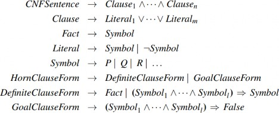
Hình 7.12 Một ngữ pháp cho dạng chuẩn hội, mệnh đề Horn và mệnh đề xác định. Một mệnh đề
CNF như ¬𝐴 ∨ ¬𝐵 ∨ 𝐶 có thể được viết ở dạng mệnh đề xác định là (𝐴 ∧ 𝐵) ⇒ 𝐶.
Một câu được biểu diễn dưới dạng phép hội của các mệnh đề được gọi là ở dạng chuẩn hội
(conjunctive normal form - CNF) (xem Hình 7.12). Bây giờ chúng ta sẽ mô tả một quy trình
chuyển đổi sang CNF. Chúng ta minh họa quy trình bằng cách chuyển đổi câu 𝐵1,1 ⇔ (𝑃1,2 ∨ 𝑃2,1)
thành CNF. Các bước như sau:
Loại bỏ ⇔ , thay thế 𝛼 ⇔ 𝛽 bằng (𝛼 ⇒ 𝛽) ∧ (𝛽 ⇒ 𝛼) :
(𝐵1,1 ⇒ (𝑃1,2 ∨ 𝑃2,1)) ∧ ((𝑃1,2 ∨ 𝑃2,1) ⇒ 𝐵1,1).
Loại bỏ ⇒ , thay thế 𝛼 ⇒ 𝛽 bằng ¬𝛼 ∨ 𝛽 :
(¬𝐵1,1 ∨ 𝑃1,2 ∨ 𝑃2,1) ∧ (¬(𝑃1,2 ∨ 𝑃2,1) ∨ 𝐵1,1).
CNF yêu cầu ¬ chỉ xuất hiện trong các literal, vì vậy chúng ta “đưa ¬ vào trong” bằng
cách áp dụng lặp lại các tương đương từ Hình 7.11:
¬(¬𝛼) ≡ 𝛼 (loại bỏ phủ định kép)
¬(𝛼 ∧ 𝛽) ≡ (¬𝛼 ∨ ¬𝛽) (De Morgan)
¬(𝛼 ∨ 𝛽) ≡ (¬𝛼 ∧ ¬𝛽) (De Morgan)
Trong ví dụ này, chúng ta chỉ cần áp dụng quy tắc cuối cùng:
(¬𝐵1,1 ∨ 𝑃1,2 ∨ 𝑃2,1) ∧ ((¬𝑃1,2 ∧ ¬𝑃2,1) ∨ 𝐵1,1).
Bây giờ chúng ta có một câu chứa các toán tử ∧ và ∨ lồng nhau áp dụng cho các literal.
Chúng ta áp dụng luật phân phối từ Hình 7.11, phân phối ∨ qua ∧ ở mọi nơi có thể:
(¬𝐵1,1 ∨ 𝑃1,2 ∨ 𝑃2,1) ∧ (¬𝑃1,2 ∨ 𝐵1,1) ∧ (¬𝑃2,1 ∨ 𝐵1,1).
Câu ban đầu bây giờ đã ở dạng CNF, dưới dạng một phép hội của ba mệnh đề. Mặc dù khó đọc
hơn, nhưng nó có thể được sử dụng làm đầu vào cho một thủ tục giải tích.
Một thuật toán giải tích
Các thủ tục suy luận dựa trên giải tích hoạt động bằng cách sử dụng nguyên lý chứng minh bằngđược giới thiệu ở trang 241. Tức là, để chứng minh 𝐾𝐵 𝖼 𝛼 , chúng ta chứng minh
rằng (𝐾𝐵 ∧ ¬𝛼) là không thỏa được. Chúng ta thực hiện điều này bằng cách chứng minh một mâu
thuẫn.
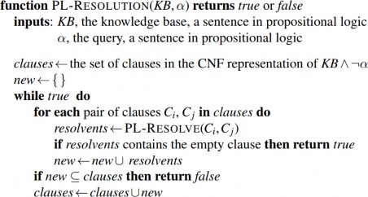
Hình 7.13 Một thuật toán giải quyết đơn giản cho logic mệnh đề. PL-RESOLVE trả về tập hợp tất
cả các mệnh đề khả thi thu được bằng cách giải quyết hai đầu vào của nó.
Một thuật toán giải tích được trình bày trong Hình 7.13. Đầu tiên, (𝐾𝐵 ∧ ¬𝛼) được chuyển đổi
thành CNF. Sau đó, quy tắc giải tích được áp dụng cho các mệnh đề kết quả. Mỗi cặp chứa các
literal bù nhau được giải tích để tạo ra một mệnh đề mới, được thêm vào tập hợp nếu nó chưa có.
Quá trình tiếp tục cho đến khi một trong hai điều sau xảy ra:
Không có mệnh đề mới nào có thể được thêm vào, trong trường hợp này 𝐾𝐵 không suy ra
𝛼 ; hoặc,
Hai mệnh đề giải tích để tạo ra mệnh đề rỗng (empty clause), trong trường hợp này 𝐾𝐵
suy ra 𝛼 .
Mệnh đề rỗng—một phép tuyển không có mệnh đề nào—tương đương với False vì một phép tuyển
chỉ đúng khi ít nhất một trong các mệnh đề của nó đúng. Hơn nữa, mệnh đề rỗng chỉ phát sinh từ
việc giải tích hai mệnh đề đơn vị mâu thuẫn, chẳng hạn như 𝑃 và ¬𝑃 .
Chúng ta có thể áp dụng thủ tục giải tích cho một suy luận rất đơn giản trong thế giới wumpus.
Khi tác nhân ở [1,1], không có gió, vì vậy không thể có hố ở các ô lân cận. Cơ sở tri thức liên quan
là:
𝐾𝐵 = 𝑅2 ∧ 𝑅4 = (𝐵1,1 ⇔ (𝑃1,2 ∨ 𝑃2,1)) ∧ ¬𝐵1,1,
và chúng ta muốn chứng minh 𝛼 , chẳng hạn là ¬𝑃1,2 . Khi chúng ta chuyển đổi (𝐾𝐵 ∧ ¬𝛼) thành
CNF, chúng ta thu được các mệnh đề được hiển thị ở đầu Hình 7.14. Hàng thứ hai của hình cho
thấy các mệnh đề thu được bằng cách giải tích các cặp trong hàng đầu tiên. Sau đó, khi 𝑃1,2 được
giải tích với ¬𝑃1,2 , chúng ta thu được mệnh đề rỗng, được hiển thị dưới dạng một hình vuông nhỏ.
Kiểm tra Hình 7.14 cho thấy nhiều bước giải tích là vô nghĩa. Ví dụ, mệnh đề 𝐵1,1 ∨ ¬𝐵1,1 ∨ 𝑃1,2
tương đương với True ∨ 𝑃1,2 , tương đương với True. Suy ra rằng True là đúng không hữu ích
lắm. Do đó, bất kỳ mệnh đề nào chứa hai literal bù nhau đều có thể bị loại bỏ.
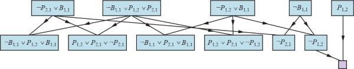
Hình 7.14 Ứng dụng một phần của PL-RESOLUTION cho một suy luận đơn giản trong thế giới
wumpus để chứng minh truy vấn ¬𝑃1,2. Mỗi một trong bốn mệnh đề ngoài cùng bên trái ở hàng
trên cùng được ghép nối với mỗi mệnh đề trong ba mệnh đề còn lại, và quy tắc giải quyết được áp
dụng để tạo ra các mệnh đề ở hàng dưới cùng. Chúng ta thấy rằng mệnh đề thứ ba và thứ tư ở hàng
trên cùng kết hợp để tạo ra mệnh đề ¬𝑃1,2, sau đó được giải quyết với 𝑃1,2 để tạo ra mệnh đề rỗng,
có nghĩa là truy vấn được chứng minh.
Tính đầy đủ của giải tích
Để kết luận phần thảo luận về giải tích, bây giờ chúng ta sẽ chỉ ra tại sao PL-Resolution là đầy đủ.
Để làm điều này, chúng ta giới thiệu bao đóng giải tích (resolution closure) 𝑅𝐶(𝑆) của một tập
hợp các mệnh đề 𝑆 , là tập hợp tất cả các mệnh đề có thể suy ra bằng cách áp dụng lặp lại quy tắc
giải tích cho các mệnh đề trong 𝑆 hoặc các dẫn xuất của chúng. Bao đóng giải tích là những gì PL-
Resolution tính toán như giá trị cuối cùng của biến clauses. Dễ dàng thấy rằng 𝑅𝐶(𝑆) phải là hữu
hạn: nhờ bước nhân tử hóa, chỉ có hữu hạn các mệnh đề phân biệt có thể được xây dựng từ các ký
hiệu 𝑃1, … , 𝑃𝑘 xuất hiện trong 𝑆 . Do đó, PL-Resolution luôn kết thúc.
Định lý đầy đủ cho giải tích trong logic mệnh đề được gọi là định lý giải tích cơ bản (ground: Nếu một tập hợp các mệnh đề là không thỏa được, thì bao đóng giải tích của
các mệnh đề đó chứa mệnh đề rỗng.
Định lý này được chứng minh bằng cách chứng minh phản đảo của nó: nếu bao đóng 𝑅𝐶(𝑆) không
chứa mệnh đề rỗng, thì 𝑆 là thỏa được. Trên thực tế, chúng ta có thể xây dựng một mô hình cho 𝑆
với các giá trị chân lý phù hợp cho 𝑃1, … , 𝑃𝑘 . Quy trình xây dựng như sau:
Với mỗi 𝑖 từ 1 đến 𝑘 ,
Nếu một mệnh đề trong 𝑅𝐶(𝑆) chứa literal ¬𝑃𝑖 và tất cả các literal khác đều sai dưới phép
gán đã chọn cho 𝑃1, … , 𝑃𝑖−1 , thì gán false cho 𝑃𝑖 .
Ngược lại, gán true cho 𝑃𝑖 .
Phép gán này cho 𝑃1, … , 𝑃𝑘 là một mô hình của 𝑆 . Để thấy điều này, giả sử ngược lại—rằng tại
một giai đoạn 𝑖 nào đó trong chuỗi, việc gán ký hiệu 𝑃𝑖 khiến một mệnh đề 𝐶 nào đó trở thành sai.
Để điều này xảy ra, tất cả các literal khác trong 𝐶 phải đã bị phủ định bởi các phép gán cho
𝑃1, … , 𝑃𝑖−1 . Do đó, 𝐶 lúc này phải có dạng như (false ∨ false ∨ ⋯ ∨ false ∨ 𝑃𝑖) hoặc (false ∨
false ∨ ⋯ ∨ false ∨ ¬𝑃𝑖) . Nếu chỉ một trong hai mệnh đề này nằm trong 𝑅𝐶(𝑆) , thì thuật toán sẽ
gán giá trị chân lý phù hợp cho 𝑃𝑖 để 𝐶 trở thành đúng. Vì vậy, 𝐶 chỉ có thể bị phủ định nếu cả hai
mệnh đề này đều có trong 𝑅𝐶(𝑆) .
Bây giờ, vì 𝑅𝐶(𝑆) đóng dưới phép giải, nó sẽ chứa kết quả giải của hai mệnh đề này, và kết quả
giải đó sẽ có tất cả các literal của nó đã bị phủ định bởi các phép gán cho 𝑃1, … , 𝑃𝑖−1 . Điều này
mâu thuẫn với giả định ban đầu rằng mệnh đề bị phủ định đầu tiên xuất hiện ở giai đoạn 𝑖 . Do đó,
chúng ta đã chứng minh rằng quá trình xây dựng này không bao giờ phủ định một mệnh đề trong
𝑅𝐶(𝑆) ; nghĩa là, nó tạo ra một mô hình của 𝑅𝐶(𝑆) . Cuối cùng, vì 𝑆 được chứa trong 𝑅𝐶(𝑆) , bất
kỳ mô hình nào của 𝑅𝐶(𝑆) cũng là một mô hình của 𝑆 chính nó.
Mệnh đề Horn và mệnh đề xác định
Sự đầy đủ của luật phân giải làm cho nó trở thành một phương pháp suy luận quan trọng. Tuy
nhiên, trong nhiều tình huống thực tế, sức mạnh đầy đủ của phân giải là không cần thiết. Một số
cơ sở tri thức trong thực tế tuân theo các hạn chế nhất định về hình thức của các câu, điều này cho
phép chúng sử dụng một thuật toán suy luận hạn chế hơn nhưng hiệu quả hơn.
Một dạng hạn chế như vậy là mệnh đề xác định (definite clause), một phép tuyển của các literal
trong đó chỉ có một literal là dương. Ví dụ, mệnh đề (−𝐿1,1 ∨ ¬𝐵𝑟𝑒𝑒𝑧𝑒 ∨ 𝐵1,1) là một mệnh đề
xác định, trong khi (−𝐵1,1 ∨ 𝑃1,2 ∨ 𝑃2,1) thì không, vì nó có hai literal dương.
Tổng quát hơn một chút là mệnh đề Horn, một phép tuyển của các literal trong đó có nhiều nhất
một literal dương. Do đó, tất cả các mệnh đề xác định đều là mệnh đề Horn, cũng như các mệnh
đề không có literal dương nào; những mệnh đề này được gọi là mệnh đề mục tiêu (goal clauses).
Mệnh đề Horn đóng dưới phép phân giải: nếu bạn phân giải hai mệnh đề Horn, bạn sẽ nhận được
một mệnh đề Horn. Một lớp khác là câu k-CNF, một câu CNF trong đó mỗi mệnh đề có nhiều
nhất 𝑘 literal.
Cơ sở tri thức chỉ chứa các mệnh đề xác định thú vị vì ba lý do:
Biểu diễn ngụ ý: Mỗi mệnh đề xác định có thể được viết dưới dạng một phép kéo theo,
trong đó tiền đề là một phép hội của các literal dương và kết luận là một literal dương duy
nhất. Ví dụ, mệnh đề xác định (−𝐿1,1 ∨ ¬𝐵𝑟𝑒𝑒𝑧𝑒 ∨ 𝐵1,1) có thể được viết thành phép kéo
theo (𝐿1,1 ∧ 𝐵𝑟𝑒𝑒𝑧𝑒) ⇒ 𝐵1,1 . Ở dạng này, câu dễ hiểu hơn: nếu tác nhân ở [1,1] và nhận
được cảm giác có gió, thì [1,1] có gió. Trong mệnh đề Horn, tiền đề được gọi là thân
(body) và kết luận được gọi là đầu (head). Một câu chỉ gồm một literal dương, chẳng hạn
𝐿1,1 , được gọi là sự kiện (fact). Nó cũng có thể được viết dưới dạng phép kéo theo 𝑇𝑟𝑢𝑒 ⇒
𝐿1,1 , nhưng viết đơn giản là 𝐿1,1 sẽ ngắn gọn hơn.
Lan truyền tiến và lan truyền ngược
Thuật toán lan truyền tiến (PL-FC-ENTAILS?) xác định xem một ký hiệu mệnh đề đơn 𝑞 —truy
vấn—có được suy ra từ một cơ sở tri thức gồm các mệnh đề xác định hay không. Nó bắt đầu từ
các sự kiện đã biết (các literal dương) trong cơ sở tri thức. Nếu tất cả các tiền đề của một phép kéo
theo đã được biết, thì kết luận của nó sẽ được thêm vào tập các sự kiện đã biết. Ví dụ, nếu 𝐿1,1 và
𝐵𝑟𝑒𝑒𝑧𝑒 đã biết và (𝐿1,1 ∧ 𝐵𝑟𝑒𝑒𝑧𝑒) ⇒ 𝐵1,1 nằm trong cơ sở tri thức, thì 𝐵1,1 có thể được thêm vào.
Quá trình này tiếp tục cho đến khi truy vấn 𝑞 được thêm vào hoặc không thể suy luận thêm được
nữa. Thuật toán được trình bày trong Hình 7.15; điểm chính cần nhớ là nó chạy trong thời gian
tuyến tính.
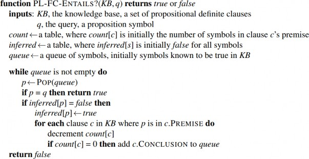
Hình 7.15 Thuật toán suy diễn tiến trong logic mệnh đề. Hàng đợi (queue) theo dõi các ký hiệu
đã biết là đúng nhưng chưa được “xử lý.” Bảng count ghi nhận số lượng tiền đề của mỗi suy diễn
chưa được chứng minh. Mỗi khi một ký hiệu mới 𝑝 từ hàng đợi được xử lý, giá trị count sẽ giảm
đi một cho mỗi suy diễn mà tiền đề của nó chứa 𝑝 (có thể xác định nhanh trong thời gian hằng số
nhờ lập chỉ mục phù hợp). Nếu count đạt giá trị 0, tất cả tiền đề của suy diễn đã được biết đến, do
đó kết luận của nó có thể được thêm vào hàng đợi. Cuối cùng, cần theo dõi các ký hiệu đã được
xử lý; một ký hiệu đã có trong tập ký hiệu suy ra không cần thêm vào hàng đợi lần nữa. Điều này
tránh công việc trùng lặp và ngăn các vòng lặp vô hạn do các suy diễn như 𝑃 ⇒ 𝑄 và 𝑄 ⇒ 𝑃 gây
ra.
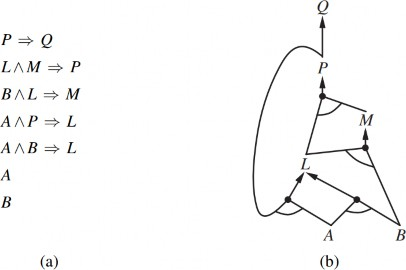
Hình 7.16 (a) Một tập hợp các mệnh đề Horn. (b) Đồ thị AND–OR tương ứng.
Cách tốt nhất để hiểu thuật toán là thông qua một ví dụ và hình ảnh. Hình 7.16(a) cho thấy một cơ
sở tri thức đơn giản gồm các mệnh đề Horn với 𝐴 và 𝐵 là các sự kiện đã biết. Hình 7.16(b) cho
thấy cùng một cơ sở tri thức được vẽ dưới dạng đồ thị AND-OR (xem Chương 4). Trong đồ thị
AND-OR, nhiều cạnh được nối bằng một cung biểu thị một phép hội—mọi cạnh phải được chứng
minh—trong khi nhiều cạnh không có cung biểu thị một phép tuyển—bất kỳ cạnh nào cũng có thể
được chứng minh. Có thể dễ dàng thấy cách lan truyền tiến hoạt động trong đồ thị. Các lá đã biết
(ở đây là 𝐴 và 𝐵 ) được thiết lập, và suy luận lan truyền lên đồ thị càng xa càng tốt. Bất cứ khi nào
xuất hiện một phép hội, quá trình lan truyền sẽ chờ cho đến khi tất cả các thành phần của phép hội
được biết trước khi tiếp tục. Bạn đọc được khuyến khích làm việc chi tiết qua ví dụ này.
Dễ dàng thấy rằng lan truyền tiến là đúng đắn (sound): mỗi suy luận về cơ bản là một ứng dụng
của Modus Ponens. Lan truyền tiến cũng đầy đủ (complete): mọi câu nguyên tử được suy ra sẽ
được dẫn xuất. Cách dễ nhất để thấy điều này là xem xét trạng thái cuối cùng của bảng suy luận
(sau khi thuật toán đạt đến điểm cố định mà không có suy luận mới nào có thể thực hiện được).
Bảng này chứa giá trị true cho mỗi ký hiệu được suy ra trong quá trình và false cho tất cả các ký
hiệu khác. Chúng ta có thể xem bảng này như một mô hình logic; hơn nữa, mọi mệnh đề xác định
trong cơ sở tri thức ban đầu đều đúng trong mô hình này.
Hơn nữa, bất kỳ câu nguyên tử 𝑞 nào được suy ra bởi cơ sở tri thức phải đúng trong tất cả các mô
hình của nó và trong mô hình này nói riêng. Do đó, mọi câu nguyên tử được suy ra 𝑞 phải được
suy ra bởi thuật toán.
Lan truyền tiến là một ví dụ về khái niệm chung của lập luận hướng dữ liệu (data-driven—tức là lập luận trong đó trọng tâm chú ý bắt đầu với dữ liệu đã biết. Nó có thể được
sử dụng trong một tác nhân để suy ra các kết luận từ các nhận thức đến, thường mà không có một
truy vấn cụ thể trong tâm trí. Ví dụ, tác nhân trong thế giới wumpus có thể nói (Tell) các nhận
thức của nó cho cơ sở tri thức bằng cách sử dụng một thuật toán lan truyền tiến gia tăng, trong đó
các sự kiện mới có thể được thêm vào chương trình nghị sự để khởi tạo các suy luận mới. Ở con
người, một lượng lập luận hướng dữ liệu nhất định xảy ra khi thông tin mới đến. Ví dụ, nếu tôi
đang ở trong nhà và nghe thấy tiếng mưa bắt đầu rơi, tôi có thể nghĩ rằng buổi dã ngoại sẽ bị hủy.
Tuy nhiên, có lẽ tôi sẽ không nghĩ rằng cánh hoa thứ mười bảy trên bông hồng lớn nhất trong vườn
của hàng xóm sẽ bị ướt; con người kiểm soát chặt chẽ quá trình lan truyền tiến, để không bị choáng
ngợp bởi những hậu quả không liên quan.
Thuật toán lan truyền ngược (backward chaining), như tên gọi của nó, hoạt động ngược từ truy
vấn. Nếu truy vấn 𝑞 đã được biết là đúng, thì không cần thực hiện thêm công việc nào. Ngược lại,
thuật toán tìm các phép kéo theo trong cơ sở tri thức có kết luận là 𝑞 . Nếu tất cả các tiền đề của
một trong những phép kéo theo đó có thể được chứng minh là đúng (bằng lan truyền ngược), thì
𝑞 là đúng. Khi áp dụng cho truy vấn 𝑄 trong Hình 7.16, nó làm việc ngược xuống đồ thị cho đến
khi gặp một tập các sự kiện đã biết, 𝐴 và 𝐵 , tạo thành cơ sở cho một bằng chứng. Thuật toán về
cơ bản giống với thuật toán AND-OR-GRAPH-SEARCH trong Hình 4.11. Giống như lan truyền
tiến, một triển khai hiệu quả chạy trong thời gian tuyến tính.
Lan truyền ngược là một dạng của lập luận hướng mục tiêu (goal-directed reasoning). Nó hữu
ích để trả lời các câu hỏi cụ thể như “Tôi nên làm gì bây giờ?” và “Chìa khóa của tôi ở đâu?”
Thông thường, chi phí của lan truyền ngược ít hơn nhiều so với thời gian tuyến tính so với kích
thước của cơ sở tri thức, vì quá trình chỉ chạm vào các sự kiện có liên quan.
Kiểm tra mô hình hiệu quả trong logic mệnh đề
Trong phần này, chúng ta sẽ mô tả hai họ thuật toán hiệu quả để suy luận tổng quát trong logic
mệnh đề dựa trên kiểm tra mô hình: một phương pháp dựa trên tìm kiếm quay lui (backtracking
search) và một phương pháp dựa trên tìm kiếm leo đồi cục bộ (local hill-climbing search). Những
thuật toán này là một phần của “công nghệ” logic mệnh đề. Phần này có thể được đọc lướt qua
trong lần đọc đầu tiên của chương.
Các thuật toán chúng ta mô tả dùng để kiểm tra tính thỏa mãn (satisfiability) — bài toán SAT.
(Như đã đề cập trong Mục 7.5, kiểm tra hệ quả logic, 𝛼 𝖼 𝛽 , có thể được thực hiện bằng cách
kiểm tra tính không thỏa mãn của 𝛼 ∧ ¬𝛽 ). Chúng ta đã đề cập trên trang 241 về mối liên hệ giữa
việc tìm kiếm một mô hình thỏa mãn một câu logic và việc tìm kiếm lời giải cho một bài toán thỏa
mãn ràng buộc (CSP). Do đó, hai họ thuật toán kiểm tra tính thỏa mãn trong logic mệnh đề rất
giống với các thuật toán quay lui trong Mục 5.3 và các thuật toán tìm kiếm cục bộ trong Mục 5.4.
Tuy nhiên, chúng cực kỳ quan trọng vì nhiều bài toán tổ hợp trong khoa học máy tính có thể được
quy về việc kiểm tra tính thỏa mãn của một câu logic mệnh đề. Bất kỳ cải tiến nào trong các thuật
toán kiểm tra tính thỏa mãn đều có tác động lớn đến khả năng xử lý độ phức tạp nói chung.
Thuật toán quay lui hoàn chỉnh
Thuật toán đầu tiên chúng ta xem xét thường được gọi là thuật toán Davis–Putnam, theo bài báo
quan trọng của Martin Davis và Hilary Putnam (1960). Thuật toán này thực chất là phiên bản được
mô tả bởi Davis, Logemann và Loveland (1962), nên chúng ta sẽ gọi nó là DPLL theo tên viết tắt
của cả bốn tác giả. DPLL nhận đầu vào là một câu ở dạng chuẩn hội (CNF) — một tập các mệnh
đề. Giống như Backtracking-Search và TT-ENTAILS?, nó thực chất là một phép liệt kê đệ quy,
theo chiều sâu của các mô hình khả dĩ. Thuật toán này bao gồm ba cải tiến so với phương pháp
đơn giản của TT-ENTAILS?:
Kết thúc sớm (Early termination): Thuật toán phát hiện xem câu có phải là đúng hay sai
ngay cả khi mô hình chưa hoàn chỉnh. Một mệnh đề là đúng nếu bất kỳ literal nào trong đó
là đúng, ngay cả khi các literal khác chưa có giá trị chân lý; do đó, toàn bộ câu có thể được
xác định là đúng ngay cả trước khi mô hình hoàn tất. Ví dụ, câu (𝐴 ∨ 𝐵) ∧ (𝐴 ∨ 𝐶) là đúng
nếu 𝐴 đúng, bất kể giá trị của 𝐵 và 𝐶 . Tương tự, một câu là sai nếu bất kỳ mệnh đề nào
trong đó là sai, điều này xảy ra khi tất cả các literal của mệnh đề đó đều sai. Việc kết thúc
sớm tránh phải kiểm tra toàn bộ các cây con trong không gian tìm kiếm.
Heuristic ký hiệu thuần túy (Pure symbol heuristic): Một ký hiệu thuần túy là một ký
hiệu luôn xuất hiện với cùng một “dấu” trong tất cả các mệnh đề. Ví dụ, trong ba mệnh đề
(𝐴 ∨ ¬𝐵) , (¬𝐵 ∨ ¬𝐶) và (𝐶 ∨ 𝐴) , ký hiệu 𝐴 là thuần túy vì chỉ xuất hiện dạng khẳng
định, 𝐵 là thuần túy vì chỉ xuất hiện dạng phủ định, và 𝐶 là không thuần túy. Dễ thấy rằng
nếu một câu có mô hình, thì nó cũng có một mô hình với các ký hiệu thuần túy được gán
sao cho các literal của chúng là đúng, vì việc này không bao giờ làm cho một mệnh đề trở
thành sai. Lưu ý rằng, khi xác định tính thuần túy của một ký hiệu, thuật toán có thể bỏ qua
các mệnh đề đã được biết là đúng trong mô hình đã xây dựng đến thời điểm hiện tại. Ví
dụ, nếu mô hình chứa 𝐵 = 𝑓𝑎𝑙𝑠𝑒 , thì mệnh đề (¬𝐵 ∨ ¬𝐶) đã đúng, và trong các mệnh đề
còn lại, 𝐶 chỉ xuất hiện dưới dạng khẳng định; do đó 𝐶 trở thành thuần túy.
Heuristic mệnh đề đơn vị (Unit clause heuristic): Một mệnh đề đơn vị được định nghĩa
trước đó là một mệnh đề chỉ có một literal. Trong ngữ cảnh của DPLL, nó cũng có nghĩa
là các mệnh đề trong đó tất cả các literal trừ một đã được gán giá trị sai bởi mô hình. Ví
dụ, nếu mô hình chứa 𝐵 = 𝑡𝑟𝑢𝑒 , thì (¬𝐵 ∨ ¬𝐶) đơn giản hóa thành ¬𝐶 , là một mệnh đề
đơn vị. Rõ ràng, để mệnh đề này đúng, 𝐶 phải được gán là false. Heuristic mệnh đề đơn vị
gán tất cả các ký hiệu như vậy trước khi phân nhánh phần còn lại. Một hệ quả quan trọng
của heuristic này là mọi nỗ lực chứng minh (bằng phản chứng) một literal đã có trong cơ
sở tri thức sẽ thành công ngay lập tức (Bài tập 7.KNOW). Lưu ý rằng việc gán một mệnh
đề đơn vị có thể tạo ra một mệnh đề đơn vị khác — ví dụ, khi 𝐶 được gán là false, (𝐶 ∨ 𝐴)
trở thành một mệnh đề đơn vị, khiến 𝐴 được gán là true. “Hiệu ứng dây chuyền” này của
các phép gán bắt buộc được gọi là lan truyền đơn vị (unit propagation). Nó giống với quá
trình suy diễn tiến với các mệnh đề xác định (definite clauses), và thực tế, nếu biểu thức
CNF chỉ chứa các mệnh đề xác định thì DPLL về cơ bản sẽ sao chép quá trình suy diễn
tiến. (Xem Bài tập 7.DPLL.)
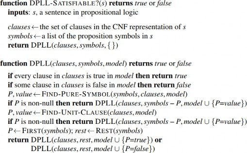
Hình 7.17 Thuật toán DPLL để kiểm tra tính thỏa mãn của một câu trong logic mệnh đề. Các ý
tưởng đằng sau FIND-PURE-SYMBOL và FIND-UNIT-CLAUSE được mô tả trong văn bản; mỗi
hàm trả về một ký hiệu (hoặc null) và giá trị chân lý để gán cho ký hiệu đó. Giống như TT-
ENTAILS?, DPLL hoạt động trên các mô hình một phần.
Thuật toán DPLL được trình bày trong Hình 7.17, cung cấp bộ khung cơ bản của quá trình tìm
kiếm mà không đi vào chi tiết triển khai.
Những gì Hình 7.17 không thể hiện là các thủ thuật giúp các bộ giải SAT có thể mở rộng để giải
quyết các bài toán lớn. Thú vị là hầu hết các thủ thuật này thực chất khá tổng quát, và chúng ta đã
gặp chúng trước đây dưới các hình thức khác:
kích thước giới hạn các xung đột được giữ lại, và những xung đột hiếm khi sử dụng sẽ bị
loại bỏ.
Lập chỉ mục thông minh (Clever indexing) (như đã thấy trong nhiều thuật toán): Các
phương pháp tăng tốc được sử dụng trong chính DPLL, cũng như các thủ thuật được sử
dụng trong các bộ giải hiện đại, yêu cầu lập chỉ mục nhanh cho các thứ như “tập các mệnh
đề trong đó biến 𝑋𝑖 xuất hiện dưới dạng literal khẳng định.” Nhiệm vụ này trở nên phức
tạp do các thuật toán chỉ quan tâm đến các mệnh đề chưa được thỏa mãn bởi các phép gán
trước đó cho biến, vì vậy các cấu trúc chỉ mục phải được cập nhật động khi quá trình tính
toán tiến triển.
Với những cải tiến này, các bộ giải hiện đại có thể xử lý các bài toán với hàng chục triệu biến.
Chúng đã cách mạng hóa các lĩnh vực như xác minh phần cứng và xác minh giao thức bảo mật,
vốn trước đây đòi hỏi các chứng minh thủ công, mất nhiều công sức.
Các thuật toán tìm kiếm cục bộ
Chúng ta đã thấy một số thuật toán tìm kiếm cục bộ trong cuốn sách này, bao gồm HILL-(trang 129) và SIMULATED-ANNEALING (trang 133). Những thuật toán này có
thể được áp dụng trực tiếp vào các bài toán thỏa mãn (SAT), miễn là chúng ta chọn đúng hàm đánh
giá. Vì mục tiêu là tìm một phép gán thỏa mãn mọi mệnh đề, một hàm đánh giá đếm số mệnh đề
không thỏa mãn sẽ đáp ứng yêu cầu này. Thực tế, đây chính là cách đo lường được sử dụng bởi
thuật toán MIN-CONFLICTS cho các bài toán CSP (trang 182). Tất cả các thuật toán này thực
hiện các bước trong không gian các phép gán hoàn chỉnh, thay đổi giá trị chân lý của một ký hiệu
mỗi lần. Không gian này thường chứa nhiều cực tiểu cục bộ, và để thoát khỏi chúng, cần áp dụng
các hình thức ngẫu nhiên khác nhau. Trong những năm gần đây, đã có rất nhiều thử nghiệm để tìm
ra sự cân bằng tốt nhất giữa tính tham lam và tính ngẫu nhiên.
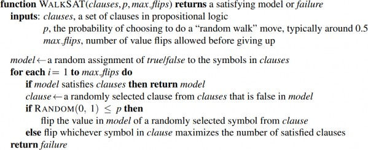
Hình 7.18 Thuật toán WALKSAT để kiểm tra tính thỏa mãn bằng cách lật ngẫu nhiên các giá trị
của các biến. Tồn tại nhiều phiên bản của thuật toán.
Một trong những thuật toán đơn giản và hiệu quả nhất xuất hiện từ những nghiên cứu này là
WALKSAT (Hình 7.18). Trong mỗi lần lặp, thuật toán chọn một mệnh đề chưa được thỏa mãn
và chọn một ký hiệu trong mệnh đề đó để đảo giá trị. Nó lựa chọn ngẫu nhiên giữa hai cách để
chọn ký hiệu cần đảo: (1) bước “min-conflicts” nhằm tối thiểu hóa số mệnh đề không thỏa mãn
trong trạng thái mới, và (2) bước “random walk” chọn ngẫu nhiên một ký hiệu trong mệnh đề.
Khi WALKSAT trả về một mô hình, câu đầu vào chắc chắn là thỏa mãn được. Tuy nhiên, khi nó
trả về thất bại, có hai nguyên nhân có thể xảy ra: hoặc câu đó không thỏa mãn được, hoặc chúng
ta cần cho thuật toán thêm thời gian. Nếu đặt max_flips = ∞ và p > 0, WALKSAT cuối cùng sẽ trả
về một mô hình (nếu tồn tại), vì các bước “random walk” cuối cùng sẽ tìm ra lời giải. Tuy nhiên,
nếu max_flips là vô hạn và câu không thỏa mãn được, thuật toán sẽ không bao giờ dừng!
Vì lý do này, WALKSAT hữu ích nhất khi chúng ta kỳ vọng tồn tại lời giải—ví dụ, các bài toán
được thảo luận trong Chương 3 và 5 thường có lời giải. Mặt khác, WALKSAT không thể phát
hiện tính không thỏa mãn, điều cần thiết để quyết định hệ quả logic. Ví dụ, một tác nhân không
thể dùng WALKSAT để chứng minh một ô là an toàn trong thế giới wumpus. Thay vào đó, nó có
thể nói, “Tôi đã suy nghĩ trong một giờ và không thể tìm ra một thế giới khả dĩ nào mà ô đó không
an toàn.” Đây có thể là một chỉ số thực nghiệm tốt cho thấy ô đó an toàn, nhưng chắc chắn không
phải là một chứng minh.
Bức tranh tổng quan về các bài toán SAT ngẫu nhiên
Một số bài toán SAT khó hơn những bài toán khác. Các bài toán dễ có thể được giải quyết bằng
bất kỳ thuật toán cũ nào, nhưng vì chúng ta biết rằng SAT là NP-đầy đủ, ít nhất một số trường hợp
bài toán phải yêu cầu thời gian chạy theo hàm mũ. Trong Chương 5, chúng ta đã thấy một số khám
phá đáng ngạc nhiên về một số loại bài toán. Ví dụ, bài toán n-queens—tưởng chừng khá phức
tạp đối với các thuật toán tìm kiếm quay lui—lại trở nên cực kỳ dễ dàng đối với các phương pháp
tìm kiếm cục bộ. Điều này là do các lời giải được phân bố rất dày đặc trong không gian các phép
gán, và bất kỳ phép gán ban đầu nào cũng đảm bảo có một lời giải gần đó. Do đó, n-queens là dễ
vì nó bị thiếu ràng buộc.
Khi xem xét các bài toán thỏa mãn trong dạng chuẩn hội (CNF), một bài toán thiếu ràng buộc là
bài toán có tương đối ít mệnh đề ràng buộc các biến. Ví dụ, đây là một câu 3-CNF ngẫu nhiên với
năm ký hiệu và năm mệnh đề:
(−𝐷 ∨ ¬𝐵 ∨ 𝐶) ∧ (𝐵 ∨ ¬𝐴 ∨ ¬𝐶) ∧ (¬𝐶 ∨ ¬𝐵 ∨ 𝐸) ∧ (𝐸 ∨ ¬𝐷 ∨ 𝐵) ∧ (𝐵 ∨ 𝐸 ∨ ¬𝐶).
16 trong số 32 phép gán khả dĩ là mô hình của câu này, vì vậy, trung bình chỉ cần hai lần đoán
ngẫu nhiên để tìm ra một mô hình. Đây là một bài toán thỏa mãn dễ dàng, giống như hầu hết các
bài toán thiếu ràng buộc. Mặt khác, một bài toán thừa ràng buộc có nhiều mệnh đề so với số biến
và có khả năng không có lời giải. Các bài toán thừa ràng buộc thường dễ giải, vì các ràng buộc
nhanh chóng dẫn đến một lời giải hoặc một ngõ cụt không thể thoát ra.
Để vượt ra khỏi những trực giác cơ bản này, chúng ta phải định nghĩa chính xác cách các câu ngẫu
nhiên được tạo ra. Ký hiệu CNF𝑘(𝑚, 𝑛) biểu thị một câu k-CNF với 𝑚 mệnh đề và 𝑛 ký hiệu,
trong đó các mệnh đề được chọn đồng nhất, độc lập và không lặp lại từ tất cả các mệnh đề có 𝑘
literal khác nhau, với các literal dương hoặc âm được chọn ngẫu nhiên. (Một ký hiệu không thể
xuất hiện hai lần trong một mệnh đề, và một mệnh đề cũng không thể xuất hiện hai lần trong một
câu.)
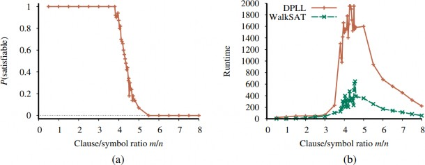
Hình 7.19 (a) Đồ thị cho thấy xác suất một câu 3-CNF ngẫu nhiên với n=50 ký hiệu là thỏa mãn,
dưới dạng một hàm của tỉ lệ mệnh đề/ký hiệu m/n. (b) Đồ thị của thời gian chạy trung bình (được
đo bằng số lần lặp) cho cả DPLL và WALKSAT trên các câu 3-CNF ngẫu nhiên. Các bài toán khó
nhất có tỉ lệ mệnh đề/ký hiệu khoảng 4.3.
Với một nguồn tạo câu ngẫu nhiên, chúng ta có thể đo lường xác suất thỏa mãn. Hình 7.19(a) vẽ
đồ thị xác suất cho CNF3(𝑚, 50) , tức là các câu với 50 biến và 3 literal mỗi mệnh đề, như một
hàm của tỷ lệ mệnh đề/ký hiệu, 𝑚/𝑛 . Như chúng ta mong đợi, với 𝑚/𝑛 nhỏ, xác suất thỏa mãn
gần bằng 1, và với 𝑚/𝑛 lớn, xác suất gần bằng 0. Xác suất giảm khá mạnh xung quanh 𝑚/𝑛 = 4.3
. Thực nghiệm cho thấy “vách đá” này vẫn giữ nguyên vị trí (với 𝑘 = 3 ) và ngày càng trở nên sắc
nét hơn khi 𝑛 tăng lên.
Về mặt lý thuyết, giả thuyết ngưỡng thỏa mãn nói rằng với mọi 𝑘 ≥ 3 , tồn tại một ngưỡng tỷ lệ
𝑟𝑘 sao cho khi 𝑛 tiến đến vô cùng, xác suất để CNF𝑘(𝑛, 𝑟𝑛) thỏa mãn trở thành 1 với mọi giá trị 𝑟
dưới ngưỡng, và 0 với mọi giá trị trên ngưỡng. Giả thuyết này vẫn chưa được chứng minh, ngay
cả với các trường hợp đặc biệt như 𝑘 = 3 . Dù là một định lý hay không, hiệu ứng ngưỡng này
thường xuất hiện trong các bài toán NP-khó.
Bây giờ chúng ta đã biết bài toán thỏa mãn và không thỏa mãn nằm ở đâu, câu hỏi tiếp theo là: đâu
là những bài toán khó? Hóa ra chúng thường nằm ở giá trị ngưỡng. Hình 7.19(b) cho thấy các bài
toán 50 ký hiệu ở giá trị ngưỡng 4.3 khó giải gấp khoảng 20 lần so với các bài toán có tỷ lệ 3.3.
Các bài toán thiếu ràng buộc là dễ giải nhất (vì rất dễ đoán ra lời giải); các bài toán thừa ràng buộc
không dễ bằng bài toán thiếu ràng buộc, nhưng vẫn dễ hơn nhiều so với các bài toán nằm ngay tại
ngưỡng.
Tác nhân dựa trên Logic Mệnh đề
Trong phần này, chúng ta sẽ tổng hợp những kiến thức đã học để xây dựng các tác nhân trong thế
giới Wumpus sử dụng logic mệnh đề. Bước đầu tiên là giúp tác nhân suy luận, ở mức độ có thể,
trạng thái của thế giới dựa trên lịch sử nhận thức của nó. Điều này đòi hỏi phải viết ra một mô hình
logic đầy đủ về các tác động của hành động. Sau đó, chúng ta sẽ chỉ ra cách tác nhân có thể sử
dụng suy luận logic trong thế giới Wumpus. Chúng ta cũng sẽ trình bày cách tác nhân có thể theo
dõi thế giới một cách hiệu quả mà không cần quay lại lịch sử nhận thức cho mỗi lần suy luận. Cuối
cùng, chúng ta sẽ chỉ ra cách tác nhân có thể sử dụng suy luận logic để xây dựng các kế hoạch đảm
bảo đạt được mục tiêu, với điều kiện cơ sở tri thức của nó đúng trong thế giới thực.
Trạng thái hiện tại của thế giới
Như đã nêu ở đầu chương, một tác nhân logic hoạt động bằng cách suy luận những gì cần làm từ
một cơ sở tri thức chứa các câu về thế giới. Cơ sở tri thức bao gồm các tiên đề—kiến thức chung
về cách thế giới vận hành—và các câu nhận thức thu được từ trải nghiệm của tác nhân trong một
thế giới cụ thể. Trong phần này, chúng ta tập trung vào vấn đề suy luận trạng thái hiện tại của thế
giới Wumpus—vị trí hiện tại, ô nào an toàn, v.v.
Chúng ta đã bắt đầu thu thập các tiên đề trong Mục 7.4.3. Tác nhân biết rằng ô bắt đầu không có
hố ( −𝑃1,1 ) và không có Wumpus ( −𝑊1,1 ). Hơn nữa, đối với mỗi ô, tác nhân biết rằng ô đó có
gió nếu và chỉ nếu một ô lân cận có hố; và một ô có mùi hôi nếu và chỉ nếu một ô lân cận có
Wumpus. Do đó, chúng ta bao gồm một tập hợp lớn các câu có dạng sau:
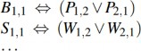
Tác nhân cũng biết rằng chỉ có một Wumpus. Điều này được biểu diễn bằng hai phần. Đầu tiên,
chúng ta phải nói rằng có ít nhất một Wumpus:
𝑊1,1 ∨ 𝑊1,2 ∨ ⋯ ∨ 𝑊4,3 ∨ 𝑊4,4.
Sau đó, chúng ta phải nói rằng có tối đa một Wumpus. Đối với mỗi cặp vị trí, chúng ta thêm một
câu nói rằng ít nhất một trong hai ô đó không có Wumpus:
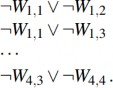
Cho đến nay, mọi thứ đều ổn. Bây giờ hãy xem xét các nhận thức của tác nhân. Chúng ta đang sử
dụng 𝑆1,1 để chỉ có mùi hôi ở [1,1]; liệu chúng ta có thể sử dụng một mệnh đề đơn giản, Stench,
để chỉ rằng tác nhân nhận thấy mùi hôi không? Thật không may là không thể: nếu không có mùi
hôi ở bước thời gian trước, ¬ Stench đã được khẳng định, và việc khẳng định mới sẽ dẫn đến mâu
thuẫn. Vấn đề được giải quyết khi chúng ta nhận ra rằng một nhận thức chỉ khẳng định điều gì đó
về thời điểm hiện tại. Do đó, nếu bước thời gian (được cung cấp cho MAKE-PERCEPT-
SENTENCE trong Hình 7.1) là 4, chúng ta thêm Stench 4 vào cơ sở tri thức, thay vì Stench—tránh
được bất kỳ mâu thuẫn nào với ¬ Stench 3 . Điều tương tự áp dụng cho các nhận thức về gió, va
chạm, ánh sáng lấp lánh và tiếng hét.
1,1
Ý tưởng gắn các mệnh đề với các bước thời gian mở rộng đến bất kỳ khía cạnh nào của thế giới
thay đổi theo thời gian. Ví dụ, cơ sở tri thức ban đầu bao gồm 𝐿0 —tác nhân ở ô [1,1] tại thời
điểm 0—cũng như FacingEast 0 , HaveArrow 0 và WumpusAlive 0 . Chúng ta sử dụng thuật ngữ
fluent (từ tiếng Latinh fluens, chảy) để chỉ một khía cạnh của thế giới thay đổi. “Fluent” là từ đồng
nghĩa với “biến trạng thái”, theo nghĩa được mô tả trong phần thảo luận về biểu diễn phân tách
trong Mục 2.4.7 (trang 76). Các ký hiệu liên quan đến các khía cạnh vĩnh viễn của thế giới không
cần chỉ số thời gian và đôi khi được gọi là biến phi thời gian.
Chúng ta có thể kết nối trực tiếp các nhận thức về mùi hôi và gió với các thuộc tính của các ô mà
chúng được trải nghiệm như sau. Đối với bất kỳ bước thời gian 𝑡 và bất kỳ ô [𝑥, 𝑦] nào, chúng ta
khẳng định:
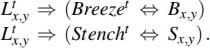
𝑥,𝑦
Bây giờ, tất nhiên, chúng ta cần các tiên đề cho phép tác nhân theo dõi các fluent như 𝐿𝑡 . Các
fluent này thay đổi do kết quả của các hành động được thực hiện bởi tác nhân, vì vậy, theo thuật
ngữ của Chương 3, chúng ta cần viết ra mô hình chuyển tiếp của thế giới Wumpus dưới dạng một
tập hợp các câu logic.
Đầu tiên, chúng ta cần các ký hiệu mệnh đề cho các sự kiện hành động. Giống như nhận thức, các
ký hiệu này được đánh chỉ số theo thời gian; do đó, Forward 0 có nghĩa là tác nhân thực hiện hành
động Forward tại thời điểm 0. Theo quy ước, nhận thức cho một bước thời gian nhất định xảy ra
trước, sau đó là hành động cho bước thời gian đó, tiếp theo là chuyển tiếp sang bước thời gian tiếp
theo.
Để mô tả cách thế giới thay đổi, chúng ta có thể thử viết các tiên đề hiệu ứng chỉ định kết quả của
một hành động tại bước thời gian tiếp theo. Ví dụ, nếu tác nhân ở vị trí [1,1] hướng về phía đông
tại thời điểm 0 và di chuyển Forward, kết quả là tác nhân ở ô [2,1] và không còn ở [1,1]:
𝐿0 ∧ FacingEast0 ∧ Forward0 ⇒ (𝐿1 ∧ ¬𝐿1 ).
1,1
2,1
1,1
Chúng ta sẽ cần một câu như vậy cho mỗi bước thời gian có thể, cho mỗi ô trong 16 ô, và mỗi
hướng trong bốn hướng. Chúng ta cũng sẽ cần các câu tương tự cho các hành động khác: Grab,
Shoot, Climb, TurnLeft và TurnRight.
2,1
Giả sử tác nhân quyết định di chuyển Forward tại thời điểm 0 và khẳng định sự kiện này vào cơ
sở tri thức của nó. Với tiên đề hiệu ứng trong Phương trình (7.1), kết hợp với các khẳng định ban
đầu về trạng thái tại thời điểm 0, tác nhân bây giờ có thể suy luận rằng nó đang ở [2,1]. Tức là,
ASK(𝐾𝐵, 𝐿1 ) = true . Cho đến nay, mọi thứ đều tốt. Thật không may, nếu chúng ta
ASK(𝐾𝐵, HaveArrow1) , câu trả lời là false, tức là tác nhân không thể chứng minh rằng nó vẫn có
mũi tên; cũng không thể chứng minh rằng nó không có! Thông tin đã bị mất vì tiên đề hiệu ứng
không nêu rõ những gì không thay đổi do kết quả của một hành động. Nhu cầu làm điều này dẫn
đến vấn đề khung hình (frame problem). Một giải pháp khả thi cho vấn đề khung hình là thêm các
tiên đề khung hình khẳng định rõ ràng tất cả các mệnh đề không thay đổi. Ví dụ, đối với mỗi thời
điểm 𝑡 , chúng ta sẽ có:
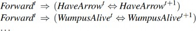
trong đó chúng ta liệt kê rõ ràng mọi mệnh đề không thay đổi từ thời điểm 𝑡 đến thời điểm 𝑡 + 1
dưới hành động Forward. Mặc dù tác nhân bây giờ biết rằng nó vẫn có mũi tên sau khi di chuyển
về phía trước và Wumpus không chết hoặc sống lại, nhưng sự gia tăng của các tiên đề khung hình
dường như không hiệu quả. Trong một thế giới với 𝑚 hành động khác nhau và 𝑛 fluent, tập hợp
các tiên đề khung hình sẽ có kích thước 𝑂(𝑚𝑛) . Biểu hiện cụ thể này của vấn đề khung hình đôi
khi được gọi là vấn đề khung hình biểu diễn. Vấn đề này đóng một vai trò quan trọng trong lịch
sử AI; chúng ta sẽ khám phá thêm trong phần ghi chú ở cuối chương.
Vấn đề khung hình biểu diễn rất quan trọng vì thế giới thực có rất nhiều fluent, nói một cách nhẹ
nhàng. May mắn thay cho con người, mỗi hành động thường chỉ thay đổi một số lượng nhỏ 𝑘 trong
số các fluent đó—thế giới thể hiện tính cục bộ. Giải quyết vấn đề khung hình biểu diễn đòi hỏi
phải định nghĩa mô hình chuyển tiếp với một tập hợp các tiên đề có kích thước 𝑂(𝑚𝑘) thay vì
𝑂(𝑚𝑛) . Ngoài ra còn có vấn đề khung hình suy luận: vấn đề dự đoán kết quả của một kế hoạch
hành động 𝑡 bước trong thời gian 𝑂(𝑘𝑡) thay vì 𝑂(𝑛𝑡) .
Giải pháp cho vấn đề liên quan đến việc thay đổi trọng tâm từ viết các tiên đề về hành động sang
viết các tiên đề về fluent. Do đó, đối với mỗi fluent 𝐹 , chúng ta sẽ có một tiên đề định nghĩa giá
trị chân lý của 𝐹𝑡+1 dựa trên các fluent (bao gồm cả 𝐹 chính nó) tại thời điểm 𝑡 và các hành động
có thể đã xảy ra tại thời điểm 𝑡 . Bây giờ, giá trị chân lý của 𝐹𝑡+1 có thể được đặt theo một trong
hai cách: hoặc hành động tại thời điểm 𝑡 khiến 𝐹 trở thành true tại 𝑡 + 1 , hoặc 𝐹 đã là true tại thời
điểm 𝑡 và hành động tại thời điểm 𝑡 không khiến nó trở thành false. Một tiên đề có dạng này được
gọi là tiên đề trạng thái kế tiếp và có dạng sau:
𝐹𝑡+1 ⇔ ActionCausesF𝑡 ∨ (𝐹𝑡 ∧ ¬ActionCausesNotF𝑡).
Một trong những tiên đề trạng thái kế tiếp đơn giản nhất là tiên đề cho HaveArrow. Vì không có
hành động nạp lại, phần ActionCausesF 𝑡 biến mất và chúng ta còn lại:
HaveArrow𝑡+1 ⇔ (HaveArrow𝑡 ∧ ¬Shoot𝑡). (7.2)
1,1
1,1
Đối với vị trí của tác nhân, các tiên đề trạng thái kế tiếp phức tạp hơn. Ví dụ, 𝐿𝑡+1 là true nếu (a)
tác nhân di chuyển Forward từ [1,2] khi hướng về phía nam, hoặc từ [2,1] khi hướng về phía tây;
hoặc (b) 𝐿𝑡 đã là true và hành động không gây ra di chuyển (do hành động không phải Forward
hoặc do hành động va vào tường). Viết ra bằng logic mệnh đề, điều này trở thành:
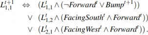
Bài tập 7.SSAX yêu cầu bạn viết các tiên đề cho các fluent còn lại trong thế giới Wumpus.
Với một tập hợp đầy đủ các tiên đề trạng thái kế tiếp và các tiên đề khác được liệt kê ở đầu phần
này, tác nhân sẽ có thể HỎI và trả lời bất kỳ câu hỏi nào có thể trả lời về trạng thái hiện tại của thế
giới. Ví dụ, trong Mục 7.2, chuỗi nhận thức và hành động ban đầu là:
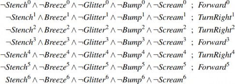
1,2
Tại thời điểm này, chúng ta có ASK(𝐾𝐵, 𝐿6 ) = true , vì vậy tác nhân biết nó đang ở đâu. Hơn
nữa, ASK(𝐾𝐵, 𝑊1,3) = true và ASK(𝐾𝐵, 𝑃3,1) = true , vì vậy tác nhân đã tìm thấy Wumpus và
một trong các hố. Câu hỏi quan trọng nhất đối với tác nhân là liệu một ô có an toàn để di chuyển
vào hay không—tức là ô đó không có hố hoặc Wumpus còn sống. Thật tiện lợi khi thêm các tiên
đề cho điều này, có dạng:
OK𝑡 ⇔ ¬𝑃
∧ ¬(𝑊
∧ WumpusAlive𝑡).
𝑥,𝑦
𝑥,𝑦
𝑥,𝑦
2,2
Cuối cùng, ASK(𝐾𝐵, OK6 ) = true , vì vậy ô [2,2] an toàn để di chuyển vào. Trên thực tế, với
một thuật toán suy luận đúng đắn và đầy đủ như DPLL, tác nhân có thể trả lời bất kỳ câu hỏi nào
có thể trả lời về ô nào an toàn—và có thể làm như vậy chỉ trong vài mili giây đối với các thế giới
Wumpus cỡ nhỏ đến trung bình.
Một tác nhân lai (hybrid agent)
Khả năng suy luận các khía cạnh khác nhau của thế giới có thể được kết hợp khá đơn giản với các
quy tắc điều kiện-hành động (xem Phần 2.4.2) và các thuật toán giải quyết vấn đề từ Chương 3 và
4 để tạo ra một tác nhân lai cho thế giới wumpus. Hình 7.20 cho thấy một cách có thể thực hiện
điều này. Chương trình tác nhân duy trì và cập nhật một cơ sở tri thức cũng như một kế hoạch hiện
tại. Cơ sở tri thức ban đầu chứa các tiên đề phi thời gian—những tiên đề không phụ thuộc vào 𝑡 ,
chẳng hạn như tiên đề liên quan đến sự thoáng mát của các ô vuông với sự hiện diện của hố. Tại
mỗi bước thời gian, câu nhận thức mới được thêm vào cùng với tất cả các tiên đề phụ thuộc vào 𝑡
, chẳng hạn như các tiên đề trạng thái kế tiếp. (Phần tiếp theo sẽ giải thích tại sao tác nhân không
cần các tiên đề cho các bước thời gian trong tương lai.) Sau đó, tác nhân sử dụng suy luận logic,
bằng cách đặt câu hỏi cho cơ sở tri thức, để xác định ô vuông nào an toàn và ô nào chưa được
khám phá.
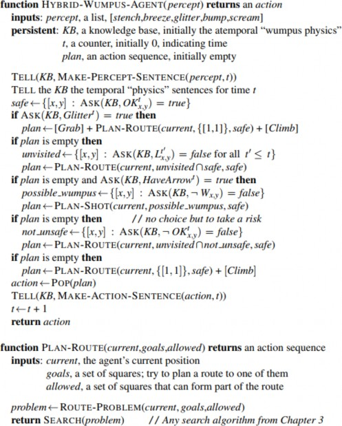
Hình 7.20 Một chương trình tác tử lai (hybrid) cho thế giới wumpus. Nó sử dụng một cơ sở tri
thức mệnh đề để suy luận trạng thái của thế giới, và sự kết hợp giữa tìm kiếm giải quyết vấn đề và
mã chuyên biệt cho miền để chọn các hành động. Mỗi khi HYBRID-WUMPUS-AGENT được
gọi, nó thêm percept vào cơ sở tri thức, và sau đó hoặc dựa vào một kế hoạch đã được xác định
trước hoặc tạo ra một kế hoạch mới, và loại bỏ bước đầu tiên của kế hoạch như hành động tiếp
theo để thực hiện.
Phần chính của chương trình tác nhân xây dựng một kế hoạch dựa trên mức độ ưu tiên giảm dần
của các mục tiêu. Đầu tiên, nếu có ánh sáng lấp lánh, chương trình sẽ xây dựng một kế hoạch để
lấy vàng, đi theo một tuyến đường trở về vị trí ban đầu và leo ra khỏi hang. Ngược lại, nếu không
có kế hoạch hiện tại, chương trình sẽ lập kế hoạch một tuyến đường đến ô vuông an toàn gần nhất
mà nó chưa từng ghé thăm, đảm bảo tuyến đường chỉ đi qua các ô vuông an toàn.
𝑥,𝑦
Việc lập kế hoạch tuyến đường được thực hiện với thuật toán tìm kiếm 𝐴∗ , không phải bằng cách
sử dụng ASK. Nếu không có ô vuông an toàn nào để khám phá, bước tiếp theo—nếu tác nhân vẫn
còn một mũi tên—là cố gắng tạo ra một ô vuông an toàn bằng cách bắn vào một trong các vị trí có
thể có của wumpus. Những vị trí này được xác định bằng cách hỏi nơi mà ASK( 𝐾𝐵, −𝑊𝑥,𝑦 ) trả
về false—tức là nơi không biết chắc chắn rằng không có wumpus. Hàm PLAN-SHOT (không
được hiển thị) sử dụng PLAN-ROUTE để lập kế hoạch một chuỗi hành động sẽ thực hiện cú bắn
này. Nếu thất bại, chương trình sẽ tìm một ô vuông để khám phá mà không chắc chắn là không an
toàn—tức là một ô vuông mà ASK( 𝐾𝐵, −𝑂𝐾𝑡 ) trả về false. Nếu không có ô vuông nào như
vậy, nhiệm vụ là không thể thực hiện được và tác nhân sẽ rút về [1,1] và leo ra khỏi hang.
Ước lượng trạng thái logic
Chương trình tác nhân trong Hình 7.20 hoạt động khá tốt, nhưng có một điểm yếu lớn: khi thời
gian trôi qua, chi phí tính toán liên quan đến các lệnh gọi ASK ngày càng tăng. Điều này xảy ra
chủ yếu vì các suy luận cần thiết phải quay ngược lại xa hơn trong thời gian và liên quan đến ngày
càng nhiều ký hiệu mệnh đề. Rõ ràng, điều này không bền vững—chúng ta không thể có một tác
nhân mà thời gian xử lý mỗi nhận thức tăng tỷ lệ thuận với độ dài cuộc đời của nó! Điều chúng ta
thực sự cần là thời gian cập nhật không đổi—tức là độc lập với 𝑡 . Câu trả lời rõ ràng là lưu hoặc
lưu trữ kết quả của suy luận, để quá trình suy luận ở bước thời gian tiếp theo có thể xây dựng dựa
trên kết quả của các bước trước đó thay vì phải bắt đầu lại từ đầu.
Như đã thấy trong Phần 4.4, lịch sử nhận thức và tất cả các hệ quả của chúng có thể được thay thế
bằng trạng thái niềm tin—tức là một số biểu diễn của tập hợp tất cả các trạng thái hiện tại có thể
có của thế giới. Biểu diễn trạng thái niềm tin dưới dạng một câu logic là một phương pháp tự nhiên.
Ví dụ, nếu cơ sở tri thức chứa 𝐿0 và −𝐿0 , thì trạng thái niềm tin ban đầu là 𝐿0 ∧ −𝐿0 . Khi
1,1
1,2
1,1
1,2
2,1
2,1
tác nhân di chuyển về phía trước và không cảm nhận được va chạm, nó thêm 𝐿1 vào cơ sở tri
thức. Sau đó, nếu nó cảm nhận được một làn gió thoảng ở [2,1] , nó thêm 𝐵1 , dẫn đến trạng thái
niềm tin 𝐿1 ∧ 𝐵1 . Tiếp tục như vậy, mỗi khi tác nhân thực hiện một hành động hoặc nhận được
2,1 2,1
một nhận thức, trạng thái niềm tin được cập nhật.
Quá trình cập nhật trạng thái niềm tin khi nhận thức mới đến được gọi là ước lượng trạng thái (xem
trang 150). Trong khi ở Phần 4.4 trạng thái niềm tin là một danh sách rõ ràng các trạng thái, ở đây
chúng ta có thể sử dụng một câu logic liên quan đến các ký hiệu mệnh đề gắn với bước thời gian
hiện tại, cũng như các ký hiệu phi thời gian. Ví dụ, câu logic
2,1
𝑊𝑢𝑚𝑝𝑢𝑠𝐴𝑙𝑖𝑣𝑒1 ∧ 𝐿1 ∧ 𝐵2,1 ∧ (𝑃3,1 ∨ 𝑃2,2) (7.4)
biểu diễn tập hợp tất cả các trạng thái tại thời điểm 1 trong đó wumpus còn sống, tác nhân ở [2,1]
, ô vuông đó thoáng mát và có một hố ở [3,1] hoặc [2,2] hoặc cả hai.
Việc duy trì một trạng thái niềm tin chính xác dưới dạng một công thức logic hóa ra không dễ
dàng. Nếu có 𝑛 ký hiệu trạng thái cho thời gian 𝑡 , thì có 2𝑛 trạng thái có thể—tức là các phép gán
giá trị chân lý cho các ký hiệu đó. Bây giờ, tập hợp các trạng thái niềm tin là tập lũy thừa (tập tất
cả các tập con) của tập hợp các trạng thái vật lý. Có 2𝑛 trạng thái vật lý, do đó có 22𝑛 trạng thái
niềm tin. Ngay cả khi chúng ta sử dụng mã hóa gọn nhất có thể cho các công thức logic, với mỗi
trạng thái niềm tin được biểu diễn bằng một số nhị phân duy nhất, chúng ta sẽ cần các số có
2
log (22𝑛
) = 2𝑛
bit để gắn nhãn trạng thái niềm tin hiện tại. Tức là, ước lượng trạng thái chính xác
có thể yêu cầu các công thức logic có kích thước hàm mũ theo số lượng ký hiệu.
Một phương pháp phổ biến và tự nhiên để ước lượng trạng thái gần đúng là biểu diễn các trạng
thái niềm tin dưới dạng các liên kết của các literal, tức là các công thức 1-CNF. Để làm điều này,
chương trình tác nhân đơn giản cố gắng chứng minh 𝑋𝑡 và −𝑋𝑡 cho mỗi ký hiệu 𝑋𝑡 (cũng như
mỗi ký hiệu phi thời gian mà giá trị chân lý chưa được biết), dựa trên trạng thái niềm tin tại 𝑡 − 1
. Liên kết của các literal có thể chứng minh được trở thành trạng thái niềm tin mới, và trạng thái
niềm tin trước đó bị loại bỏ.
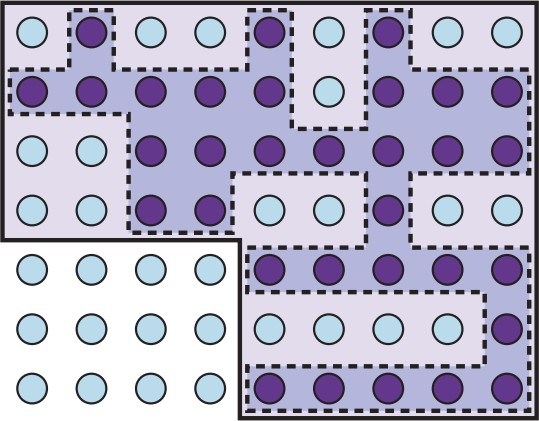
Hình 7.21 Mô tả trạng thái niềm tin 1-CNF (đường viền đậm) như một xấp xỉ bảo thủ, có thể biểu
diễn đơn giản cho trạng thái niềm tin chính xác (đường gợn sóng) (vùng tô bóng với đường viền
nét đứt). Mỗi thế giới khả thi được hiển thị dưới dạng một vòng tròn; những vòng tròn được tô
bóng là nhất quán với tất cả các percept.
Điều quan trọng là phải hiểu rằng phương pháp này có thể làm mất một số thông tin khi thời gian
trôi qua. Ví dụ, nếu câu trong Phương trình (7.4) là trạng thái niềm tin chính xác, thì cả 𝑃3,1 và 𝑃2,2
đều không thể chứng minh được riêng lẻ và không xuất hiện trong trạng thái niềm tin 1-CNF. (Bài
tập 7.HYBR khám phá một giải pháp khả thi cho vấn đề này.) Mặt khác, vì mọi literal trong trạng
thái niềm tin 1-CNF được chứng minh từ trạng thái niềm tin trước đó, và trạng thái niềm tin ban
đầu là một khẳng định đúng, chúng ta biết rằng toàn bộ trạng thái niềm tin 1-CNF phải đúng. Do
đó, tập hợp các trạng thái có thể được biểu diễn bởi trạng thái niềm tin 1-CNF bao gồm tất cả các
trạng thái thực sự có thể xảy ra dựa trên toàn bộ lịch sử nhận thức. Như minh họa trong Hình 7.21,
trạng thái niềm tin 1-CNF hoạt động như một phong bì đơn giản, hoặc một xấp xỉ bảo toàn, xung
quanh trạng thái niềm tin chính xác. Chúng ta thấy ý tưởng về các xấp xỉ bảo toàn cho các tập hợp
phức tạp như một chủ đề lặp đi lặp lại trong nhiều lĩnh vực của AI.
Tạo kế hoạch bằng suy luận mệnh đề
Tác nhân trong Hình 7.20 sử dụng suy luận logic để xác định ô vuông nào an toàn, nhưng sử dụng
thuật toán tìm kiếm 𝐴∗ để tạo kế hoạch. Trong phần này, chúng tôi chỉ ra cách tạo kế hoạch bằng
suy luận logic. Ý tưởng cơ bản rất đơn giản:
Xây dựng một câu bao gồm:
động có thể tại mỗi thời điểm lên đến một thời điểm tối đa 𝑡 ;
Khẳng định rằng mục tiêu đạt được tại thời điểm 𝑡 : HaveGold 𝑡 ∨ ClimbedOut 𝑡
.
Đưa toàn bộ câu cho một bộ giải SAT. Nếu bộ giải tìm thấy một mô hình thỏa mãn, thì
mục tiêu có thể đạt được; nếu câu không thỏa mãn, thì vấn đề không giải quyết được.
Giả sử tìm thấy một mô hình, trích xuất từ mô hình các biến đại diện cho hành động và
được gán giá trị true. Chúng cùng nhau đại diện cho một kế hoạch để đạt được mục tiêu.
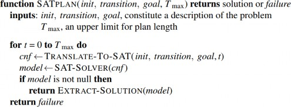
Hình 7.22 Thuật toán SATPLAN. Bài toán lập kế hoạch được dịch sang một câu CNF trong đó
mục tiêu được khẳng định là đúng tại một bước thời gian t cố định và các tiên đề được bao gồm
cho mỗi bước thời gian lên đến t. Nếu thuật toán thỏa mãn tìm thấy một mô hình, thì một kế hoạch
được trích xuất bằng cách nhìn vào các ký hiệu mệnh đề đề cập đến các hành động và được gán
giá trị đúng trong mô hình. Nếu không có mô hình nào tồn tại, thì quá trình được lặp lại với mục
tiêu được dịch chuyển một bước sau đó.
Một quy trình lập kế hoạch mệnh đề, SATPLAN, được hiển thị trong Hình 7.22. Nó triển khai ý
tưởng cơ bản vừa nêu, với một điểm khác biệt. Vì tác nhân không biết sẽ mất bao nhiêu bước để
đạt được mục tiêu, thuật toán thử từng số bước 𝑡 có thể, lên đến một độ dài kế hoạch tối đa có thể
tưởng tượng 𝑇𝑚𝑎𝑥 . Bằng cách này, nó đảm bảo tìm được kế hoạch ngắn nhất nếu có tồn tại. Do
cách SATPLAN tìm kiếm giải pháp, phương pháp này không thể sử dụng trong môi trường quan
sát một phần; SATPLAN sẽ chỉ gán các biến không quan sát được với các giá trị cần thiết để tạo
ra một giải pháp.
Bước quan trọng trong việc sử dụng SATPLAN là xây dựng cơ sở tri thức. Thoạt nhìn, có vẻ như
các tiên đề về thế giới wumpus trong Phần 7.7.1 đủ cho các bước 1(a) và 1(b) ở trên. Tuy nhiên,
có một sự khác biệt đáng kể giữa các yêu cầu cho quan hệ kéo theo (được kiểm tra bằng ASK) và
các yêu cầu cho tính thỏa mãn.
Ví dụ, xét vị trí ban đầu của tác nhân là [1,1] , và giả sử mục tiêu khiêm tốn của tác nhân là ở [2,1]
tại thời điểm 1. Cơ sở tri thức ban đầu chứa 𝐿0 và mục tiêu là 𝐿1 . Sử dụng ASK, chúng ta có
1,1 2,1
2,1
2,1
thể chứng minh 𝐿1 nếu Forward 0 được khẳng định, và, một cách đáng yên tâm, chúng ta không
thể chứng minh 𝐿1 nếu, chẳng hạn, Shoot 0 được khẳng định thay thế. Bây giờ, SATPLAN sẽ
tìm thấy kế hoạch [Forward 0 ]; cho đến nay, mọi thứ đều tốt.
2,1
Thật không may, SATPLAN cũng tìm thấy kế hoạch [Shoot 0 ]. Làm thế nào điều này có thể xảy
ra? Để tìm hiểu, chúng ta kiểm tra mô hình mà SATPLAN xây dựng: nó bao gồm phép gán 𝐿0 ,
tức là tác nhân có thể ở [2,1] tại thời điểm 1 bằng cách ở đó tại thời điểm 0 và bắn. Người ta có
thể hỏi, “Chẳng phải chúng ta đã nói tác nhân ở [1,1] tại thời điểm 0 sao?” Đúng, nhưng chúng ta
đã không nói với tác nhân rằng nó không thể ở hai nơi cùng một lúc! Đối với quan hệ kéo theo,
2,1
2,1
𝐿0 không được biết và do đó không thể được sử dụng trong một chứng minh; đối với tính thỏa
mãn, 𝐿0 không được biết và có thể được gán bất kỳ giá trị nào giúp mục tiêu trở thành true.
𝑥,𝑦
SATPLAN là một công cụ gỡ lỗi tốt cho cơ sở tri thức vì nó tiết lộ những nơi thiếu kiến thức.
Trong trường hợp cụ thể này, chúng ta có thể sửa cơ sở tri thức bằng cách khẳng định rằng, tại mỗi
bước thời gian, tác nhân chỉ ở một vị trí, sử dụng một tập hợp các câu tương tự như những câu
được sử dụng để khẳng định sự tồn tại của duy nhất một wumpus. Ngoài ra, chúng ta có thể khẳng
định −𝐿0 cho tất cả các vị trí khác [1,1] ; tiên đề trạng thái kế tiếp cho vị trí sẽ xử lý các bước
thời gian tiếp theo. Các cách sửa chữa tương tự cũng áp dụng để đảm bảo tác nhân có một và chỉ
một hướng tại một thời điểm.
SATPLAN còn có nhiều bất ngờ khác. Đầu tiên là nó tìm thấy các mô hình với các hành động
không thể thực hiện, chẳng hạn như bắn mà không có mũi tên. Để hiểu tại sao, chúng ta cần xem
xét kỹ hơn những gì các tiên đề trạng thái kế tiếp (như Phương trình (7.3)) nói về các hành động
mà điều kiện tiên quyết không được thỏa mãn. Các tiên đề này dự đoán chính xác rằng không có
gì xảy ra khi một hành động như vậy được thực hiện (xem Bài tập 7.SATP), nhưng chúng không
nói rằng hành động đó không thể được thực hiện! Để tránh tạo ra các kế hoạch với hành động
không hợp lệ, chúng ta phải thêm các tiên đề điều kiện tiên quyết khẳng định rằng một hành động
yêu cầu các điều kiện tiên quyết phải được thỏa mãn. Ví dụ, chúng ta cần nói, cho mỗi thời điểm
𝑡 , rằng
𝑆ℎ𝑜𝑜𝑡𝑡 ⇒ 𝐻𝑎𝑣𝑒𝐴𝑟𝑟𝑜𝑤𝑡.
Điều này đảm bảo rằng nếu một kế hoạch chọn hành động Shoot tại bất kỳ thời điểm nào, thì tác
nhân phải có một mũi tên tại thời điểm đó.
Bất ngờ thứ hai của SATPLAN là tạo ra các kế hoạch với nhiều hành động đồng thời. Ví dụ, nó
có thể đưa ra một mô hình trong đó cả Forward 0 và Shoot 0 đều true, điều này không được
phép. Để loại bỏ vấn đề này, chúng ta giới thiệu các tiên đề loại trừ hành động: cho mỗi cặp hành
động 𝐴𝑡 và 𝐴𝑡 , chúng ta thêm tiên đề
𝑖 𝑗
−𝐴𝑡 ∨ −𝐴𝑡.
𝑖 𝑗
Có thể chỉ ra rằng việc đi về phía trước và bắn cùng một lúc không quá khó khăn, trong khi, chẳng
hạn, bắn và nắm cùng một lúc là khá không thực tế. Bằng cách áp dụng các tiên đề loại trừ hành
động chỉ cho các cặp hành động thực sự cản trở lẫn nhau, chúng ta có thể cho phép các kế hoạch
bao gồm nhiều hành động đồng thời—và vì SATPLAN tìm thấy kế hoạch hợp lệ ngắn nhất, chúng
ta có thể chắc chắn rằng nó sẽ tận dụng khả năng này.
Tóm lại, SATPLAN tìm các mô hình cho một câu chứa trạng thái ban đầu, mục tiêu, các tiên đề
trạng thái kế tiếp, các tiên đề điều kiện tiên quyết và các tiên đề loại trừ hành động. Có thể chỉ ra
rằng tập hợp các tiên đề này là đủ, theo nghĩa không còn bất kỳ “giải pháp” giả mạo nào. Bất kỳ
mô hình nào thỏa mãn câu mệnh đề sẽ là một kế hoạch hợp lệ cho vấn đề ban đầu. Công nghệ giải
SAT hiện đại làm cho phương pháp này khá thiết thực. Ví dụ, một bộ giải kiểu DPLL không gặp
khó khăn trong việc tạo ra giải pháp cho trường hợp thế giới wumpus được hiển thị trong Hình
7.2.
Phần này đã mô tả một cách tiếp cận khai báo để xây dựng tác nhân: tác nhân hoạt động bằng cách
kết hợp khẳng định các câu trong cơ sở tri thức và thực hiện suy luận logic. Cách tiếp cận này có
một số điểm yếu ẩn trong các cụm từ như “cho mỗi thời điểm 𝑡” và “cho mỗi ô vuông [𝑥, 𝑦]”. Đối
với bất kỳ tác nhân thực tế nào, các cụm từ này phải được triển khai bằng mã tạo ra các trường
hợp của lược đồ câu chung một cách tự động để chèn vào cơ sở tri thức. Đối với một thế giới
wumpus có kích thước hợp lý—tương đương với một trò chơi máy tính nhỏ—chúng ta có thể cần
một bảng 100 × 100 và 1000 bước thời gian, dẫn đến cơ sở tri thức với hàng chục hoặc hàng trăm
triệu câu.
Điều này không chỉ trở nên khá không thực tế mà còn minh họa một vấn đề sâu sắc hơn: chúng ta
biết điều gì đó về thế giới wumpus—cụ thể là “vật lý” hoạt động giống nhau trên tất cả các ô vuông
và tất cả các bước thời gian—mà chúng ta không thể diễn đạt trực tiếp bằng ngôn ngữ logic mệnh
đề. Để giải quyết vấn đề này, chúng ta cần một ngôn ngữ biểu đạt hơn, trong đó các cụm từ như
“cho mỗi thời điểm 𝑡” và “cho mỗi ô vuông [𝑥, 𝑦]” có thể được viết một cách tự nhiên. Logic bậc
nhất, được mô tả trong Chương 8, là một ngôn ngữ như vậy; trong logic bậc nhất, một thế giới
wumpus với bất kỳ kích thước và thời lượng nào có thể được mô tả trong khoảng mười câu logic
thay vì mười triệu hoặc mười nghìn tỷ.
Tóm tắt
Chúng ta đã giới thiệu về các tác nhân dựa trên tri thức và cách định nghĩa một hệ thống logic để
các tác nhân này có thể suy luận về thế giới. Những điểm chính bao gồm:
lưu trữ trong cơ sở tri thức.
Mối quan hệ kéo theo (entailment) giữa các câu rất quan trọng để hiểu về suy luận. Một
câu α kéo theo câu β nếu β đúng trong mọi thế giới mà α đúng. Các định nghĩa tương đương
bao gồm tính hợp lệ của câu α ⇒ β và tính không thỏa mãn của câu α ∧ ¬β.
Ghi chú lịch sử và thư mục
Bài báo “Programs with Common Sense” của John McCarthy (1958, 1968) truyền bá ý tưởng về
các tác nhân sử dụng suy luận logic để điều hòa giữa tri giác và hành động. Nó cũng giương cao
ngọn cờ của chủ nghĩa khai báo (declarativism), chỉ ra rằng việc nói cho tác nhân biết những gì nó
cần biết là một cách thanh lịch để xây dựng phần mềm. Bài báo “The Knowledge Level” của Allen
Newell (1982) lập luận rằng các tác nhân hợp lý có thể được mô tả và phân tích ở mức trừu tượng
được định nghĩa bởi tri thức mà chúng sở hữu thay vì các chương trình chúng chạy.
Bản thân logic có nguồn gốc từ triết học và toán học Hy Lạp cổ đại. Plato thảo luận về cấu trúc cú
pháp của câu, tính đúng sai của chúng, ý nghĩa và tính hợp lệ của các lập luận logic. Nghiên cứu
hệ thống đầu tiên về logic là Organon của Aristotle. Các tam đoạn luận (syllogisms) của ông là
những gì chúng ta ngày nay gọi là quy tắc suy luận, mặc dù chúng thiếu tính cấu thành
(compositionality) so với các quy tắc hiện đại.
Trường phái Megarian và Stoic bắt đầu nghiên cứu hệ thống các phép logic cơ bản vào thế kỷ thứ
5 trước Công nguyên. Bảng chân lý (truth tables) là công trình của Philo of Megara. Các nhà Stoic
coi năm quy tắc suy luận cơ bản là hợp lệ mà không cần chứng minh, bao gồm quy tắc mà ngày
nay chúng ta gọi là Modus Ponens. Họ suy ra nhiều quy tắc khác từ năm quy tắc này, sử dụng,
trong số các nguyên lý khác, định lý suy luận (deduction theorem, trang 240) và rõ ràng hơn
Aristotle về chứng minh (Mates, 1953).
Ý tưởng rút gọn suy luận logic thành một quá trình thuần túy cơ học là của Wilhelm Leibniz (1646–
1716). George Boole (1847) giới thiệu hệ thống logic hình thức toàn diện và khả thi đầu tiên trong
cuốn sách The Mathematical Analysis of Logic. Logic của Boole mô phỏng chặt chẽ đại số thông
thường của số thực và sử dụng phép thay thế các biểu thức tương đương logic làm phương pháp
suy luận chính. Mặc dù nó không xử lý được toàn bộ logic mệnh đề, các nhà toán học khác đã sớm
lấp đầy những phần còn thiếu. Schröder (1877) mô tả dạng chuẩn hội (conjunctive normal form),
trong khi dạng Horn (Horn form) được Alfred Horn (1951) giới thiệu muộn hơn nhiều. Trình bày
toàn diện đầu tiên về logic mệnh đề hiện đại (và logic bậc nhất) được tìm thấy trong Begriffschrift
(“Concept Writing” hoặc “Conceptual Notation”) của Gottlob Frege (1879).
Thiết bị cơ học đầu tiên thực hiện suy luận logic là Stanhope Demonstrator, được chế tạo bởi Bá
tước Stanhope thứ ba (1753–1816). William Stanley Jevons, một trong những nhà toán học mở
rộng công trình của Boole, đã chế tạo “piano logic” vào năm 1869 để thực hiện suy luận trong
logic Boolean. Một lịch sử thú vị về các thiết bị suy luận cơ học đầu tiên này được Martin Gardner
(1968) trình bày. Chương trình máy tính đầu tiên cho suy luận logic là chương trình chứng minh
trong số học Presburger của Martin Davis (1954) (Davis, 1957), và Logic Theorist của Newell,
Shaw, và Simon (1957). Emil Post (1921) và Ludwig Wittgenstein (1922) độc lập sử dụng bảng
chân lý như một phương pháp kiểm tra tính hợp lệ của các câu logic mệnh đề.
Thuật toán Davis–Putnam (Davis và Putnam, 1960) là thuật toán đầu tiên cho phép phân giải
(resolution) trong logic mệnh đề, và thuật toán quay lui DPLL cải tiến (Davis et al., 1962) tỏ ra
hiệu quả hơn. Quy tắc phân giải và chứng minh tính đầy đủ của nó được phát triển một cách tổng
quát cho logic bậc nhất bởi J. A. Robinson (1965). Stephen Cook (1971) chỉ ra rằng việc quyết
định tính thỏa mãn của một câu trong logic mệnh đề (bài toán SAT) là NP-đầy đủ. Nhiều tập con
của logic mệnh đề được biết đến mà bài toán thỏa mãn có thể giải được trong thời gian đa thức;
mệnh đề Horn là một tập con như vậy.
Các nghiên cứu ban đầu cho thấy DPLL có độ phức tạp trung bình đa thức đối với một số phân bố
bài toán tự nhiên. Thậm chí tốt hơn, Franco và Pauli (1983) chỉ ra rằng các bài toán tương tự có
thể được giải trong thời gian hằng số bằng cách đoán ngẫu nhiên các phép gán. Được thúc đẩy bởi
thành công thực nghiệm của tìm kiếm cục bộ, Koutsoupias và Papadimitriou (1992) chỉ ra rằng
một thuật toán leo đồi đơn giản có thể giải quyết hầu hết các trường hợp bài toán thỏa mãn rất
nhanh, gợi ý rằng các bài toán khó là hiếm. Schöning (1999) trình bày một thuật toán leo đồi ngẫu
nhiên mà thời gian chạy dự kiến trong trường hợp xấu nhất đối với bài toán 3-SAT là O(1.333^n)
— vẫn là hàm mũ, nhưng nhanh hơn đáng kể so với các giới hạn trường hợp xấu nhất trước đó.
Kỷ lục hiện tại là O(1.32216^n) (Rolf, 2006).
Hiệu quả của các bộ giải mệnh đề đã tăng lên nhanh chóng. Với thời gian tính toán 10 phút, thuật
toán DPLL ban đầu trên phần cứng năm 1962 chỉ có thể giải các bài toán với 10 hoặc 15 biến (trên
máy tính xách tay năm 2019 sẽ là khoảng 30 biến). Đến năm 1995, bộ giải SATZ (Li và Anbulagan,
1997) có thể xử lý 1.000 biến, nhờ vào các cấu trúc dữ liệu tối ưu hóa để lập chỉ mục biến. Hai
đóng góp quan trọng là kỹ thuật lập chỉ mục literal được theo dõi (watched literal indexing) của
Zhang và Stickel (1996), giúp lan truyền đơn vị (unit propagation) rất hiệu quả, và việc giới thiệu
các kỹ thuật học mệnh đề (tức ràng buộc) từ cộng đồng CSP bởi Bayardo và Schrag (1997). Sử
dụng những ý tưởng này, và được thúc đẩy bởi triển vọng giải quyết các bài toán xác minh mạch
quy mô công nghiệp, Moskewicz et al. (2001) đã phát triển bộ giải CHAFF, có thể xử lý các bài
toán với hàng triệu biến. Bắt đầu từ năm 2002, các cuộc thi SAT hàng năm được tổ chức; hầu hết
các giải thưởng thuộc về các biến thể của CHAFF. Bức tranh tổng quan về các bộ giải được Gomes
et al. (2008) khảo sát.
Các thuật toán tìm kiếm cục bộ cho bài toán thỏa mãn đã được nhiều tác giả thử nghiệm trong suốt
những năm 1980, dựa trên ý tưởng tối thiểu hóa số lượng mệnh đề không thỏa mãn (Hansen và
Jaumard, 1990). Một thuật toán đặc biệt hiệu quả được phát triển bởi Gu (1989) và độc lập bởi
Selman et al. (1992), họ gọi nó là GSAT và chỉ ra rằng nó có khả năng giải quyết nhiều bài toán
rất khó một cách rất nhanh chóng. Thuật toán WALKSAT được mô tả trong chương này là của
Selman et al. (1996).
“Chuyển pha” (phase transition) trong tính thỏa mãn của các bài toán 3-SAT ngẫu nhiên lần đầu
tiên được quan sát bởi Simon và Dubois (1989) và đã tạo ra rất nhiều nghiên cứu lý thuyết và thực
nghiệm — một phần do liên hệ với hiện tượng chuyển pha trong vật lý thống kê. Crawford và
Auton (1993) xác định vị trí chuyển pha 3-SAT tại tỷ lệ mệnh đề/biến khoảng 4.26, lưu ý rằng
điều này trùng với đỉnh nhọn trong thời gian chạy của bộ giải SAT của họ. Cook và Mitchell (1997)
cung cấp một tổng quan tuyệt vời về tài liệu ban đầu về vấn đề này. Các thuật toán như lan truyền
khảo sát (survey propagation) (Parisi và Zecchina, 2002; Maneva et al., 2007) tận dụng các tính
chất đặc biệt của các trường hợp SAT ngẫu nhiên gần ngưỡng thỏa mãn và vượt trội hơn nhiều so
với các bộ giải SAT tổng quát trên các trường hợp như vậy. Tình trạng hiện tại của sự hiểu biết lý
thuyết được tổng hợp bởi Achlioptas (2009).
Các nguồn thông tin tốt về tính thỏa mãn, cả lý thuyết và thực tiễn, bao gồm Handbook of
Satisfiability (Biere et al., 2009), chuyên khảo về tính thỏa mãn của Donald Knuth (2015), và các
hội nghị quốc tế thường niên về Lý thuyết và Ứng dụng Kiểm tra Tính thỏa mãn, được gọi là SAT.
Ý tưởng xây dựng các tác nhân bằng logic mệnh đề có thể bắt nguồn từ bài báo mang tính bước
ngoặt của McCulloch và Pitts (1943), nổi tiếng với việc khởi xướng lĩnh vực mạng nơ-ron, nhưng
thực sự quan tâm đến việc triển khai thiết kế tác nhân dựa trên mạch Boolean trong não bộ. Stan
Rosenschein (Rosenschein, 1985; Kaelbling và Rosenschein, 1990) đã phát triển các cách biên
dịch các tác nhân dựa trên mạch từ các mô tả khai báo của môi trường tác vụ. Rod Brooks (1986,
1989) chứng minh hiệu quả của các thiết kế dựa trên mạch để điều khiển robot (xem Chương 26).
Brooks (1991) lập luận rằng các thiết kế dựa trên mạch là tất cả những gì cần thiết cho AI — rằng
biểu diễn và suy luận là cồng kềnh, tốn kém và không cần thiết. Theo quan điểm của chúng tôi, cả
suy luận và mạch đều cần thiết. Williams et al. (2003) mô tả một tác nhân lai — không quá khác
biệt so với tác nhân wumpus của chúng tôi — điều khiển tàu vũ trụ NASA, lập kế hoạch chuỗi
hành động và chẩn đoán, khôi phục sau lỗi.
Vấn đề chung theo dõi một môi trường quan sát một phần được giới thiệu cho các biểu diễn dựa
trên trạng thái trong Chương 4. Phiên bản của nó cho các biểu diễn mệnh đề được nghiên cứu bởi
Amir và Russell (2003), những người đã xác định một số lớp môi trường cho phép các thuật toán
ước lượng trạng thái hiệu quả và chỉ ra rằng đối với một số lớp khác, vấn đề là không thể giải quyết
được. Bài toán chiếu thời gian (temporal projection), liên quan đến việc xác định các mệnh đề nào
đúng sau khi thực hiện một chuỗi hành động, có thể được coi là một trường hợp đặc biệt của ước
lượng trạng thái với tri giác rỗng. Nhiều tác giả đã nghiên cứu bài toán này do tầm quan trọng của
nó trong lập kế hoạch; một số kết quả khó quan trọng đã được thiết lập bởi Liberatore (1997). Ý
tưởng biểu diễn một trạng thái niềm tin bằng các mệnh đề có thể bắt nguồn từ Wittgenstein (1922).
Cách tiếp cận ước lượng trạng thái logic sử dụng chỉ số thời gian trên các biến mệnh đề được đề
xuất bởi Kautz và Selman (1992). Các thế hệ sau của SATPLAN có thể tận dụng những tiến bộ
trong bộ giải SAT và vẫn là một trong những cách hiệu quả nhất để giải quyết các bài toán lập kế
hoạch khó (Kautz, 2006).
Bài toán khung (frame problem) lần đầu tiên được nhận ra bởi McCarthy và Hayes (1969). Nhiều
nhà nghiên cứu coi bài toán này không thể giải quyết được trong logic bậc nhất, và nó đã thúc đẩy
rất nhiều nghiên cứu về logic không đơn điệu (nonmonotonic logics). Các triết gia từ Dreyfus
(1972) đến Crockett (1994) đã coi bài toán khung như một triệu chứng của sự thất bại không thể
tránh khỏi của toàn bộ ngành AI. Giải pháp cho bài toán khung bằng các tiên đề trạng thái kế tiếp
(successor-state axioms) là của Ray Reiter (1991). Thielscher (1999) xác định bài toán khung suy
luận (inferential frame problem) như một ý tưởng riêng biệt và cung cấp một giải pháp. Nhìn lại,
người ta có thể thấy rằng các tác nhân của Rosenschein (1985) đã sử dụng các mạch triển khai các
tiên đề trạng thái kế tiếp, nhưng Rosenschein không nhận ra rằng bài toán khung do đó đã được
giải quyết phần lớn.
Các bộ giải mệnh đề hiện đại đã được áp dụng cho nhiều ứng dụng công nghiệp, chẳng hạn như
tổng hợp phần cứng máy tính (Nowick et al., 1993). Bộ kiểm tra tính thỏa mãn SATMC đã được
sử dụng để phát hiện một lỗ hổng chưa từng được biết đến trước đây trong giao thức đăng nhập
trình duyệt Web (Armando et al., 2008).
Thế giới wumpus được phát minh như một trò chơi bởi Gregory Yob (1975). Trớ trêu thay, Yob
phát triển nó vì chán các trò chơi trên lưới hình chữ nhật: ông đặt wumpus của mình trên một khối
mười hai mặt, và chúng tôi đặt nó trở lại trên lưới cũ nhàm chán. Michael Genesereth đề xuất sử
dụng thế giới wumpus như một bệ thử nghiệm cho tác nhân.